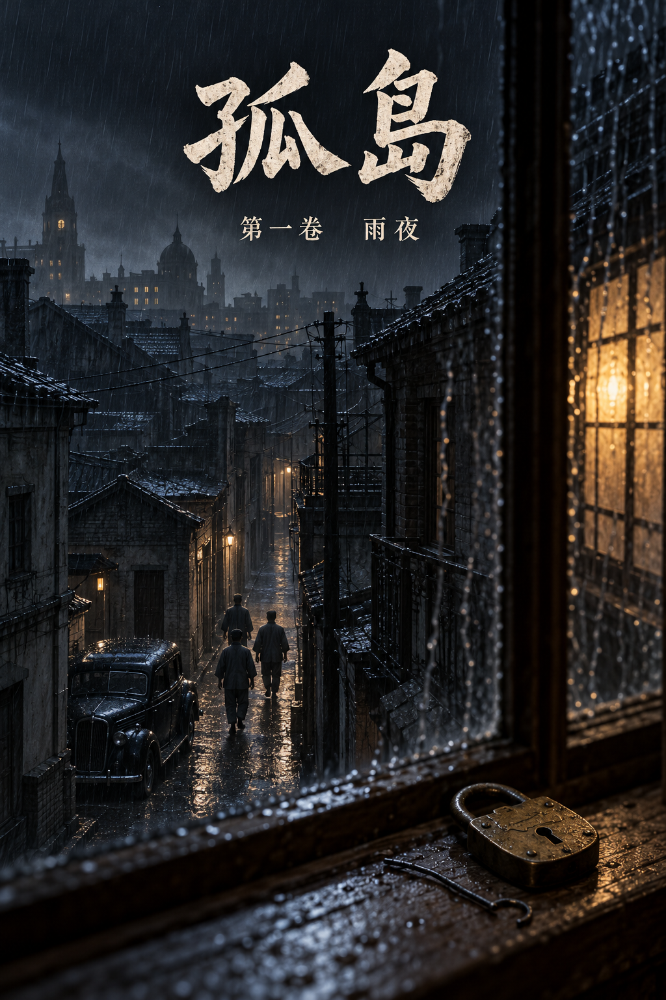

孤岛
序言
民国二十六年十一月，国军西撤，上海华界尽失。日本人占了闸北、南市、虹口，占了浦东，占了黄浦江上下游所有的码头，只有苏州河南岸那两块租界没有动：英美人管的公共租界，法国人管的法租界。四面是日本兵，中间一块弹丸之地，外国旗子还挂着，跑马厅照样赛马，大光明照样放米高梅的新片，百乐门照样跳到天亮。
上海人管这块地方叫孤岛。
孤岛上住着四百万人，逃难来的占了一半。它是沦陷区里唯一一块日本宪兵不能随便进门抓人的地方，所以重庆的人藏在这里，共产党的人藏在这里，想发国难财的人藏在这里，想活命的人也藏在这里。日本人进不来，就派人进来；进来的人杀不完，就养一群中国人去杀。
于是孤岛上有了好几把刀。
一把在虹口北四川路。宪兵队特高课的红砖楼，地下室比哪里都深，抓人不用讲理由，只是过不了苏州河。
一把在梅机关。日本陆军派来扶植汪精卫的机关，影佐祯昭坐镇，晴气庆胤派在七十六号当指导官，手里攥着汪政府的饭碗，也攥着七十六号的缰绳。宪兵队和梅机关都是日本人，互相看不上。
一把在沪西极司菲尔路七十六号。汪精卫的特工总部，丁默邨挂主任的牌子，李士群当家，吴四宝手下的打手都是青帮出身。上海人提起它，不说名字，只说门牌号。
另一头是重庆。军统上海区，戴笠的手伸在这里，区长陈恭澍，在河内刺过汪精卫；中统，陈立夫的人，和军统各管一摊，互相看不上，可在锄奸这件事上，两家的刀朝着一个方向。
还有藏在静安寺一家旧书店里的共产党，只听，不动，不在上海添一个死人。
还有青帮。杜月笙人在香港，门生遍布码头；黄金荣坐镇法租界，大世界是他的产业。谁的船要出吴淞口，谁的人要藏进哪条弄堂，都得过他们的手。
还有租界的巡捕房。法国人、英国人，谁也不想惹日本人，谁也不想丢了面子；巡捕房里的华人探目，有人拿重庆的钱，有人拿七十六号的钱，有人两边都拿。
这些地方，白天都和别处一样。
民国二十八年九月的一个夜里，下着雨。善钟路一条弄堂口，停下了一辆黑色的福特，车灯灭着，下来四个穿短打的人。
弄堂里一间亭子间的窗纸破了一个角，有一个年轻人从那个角往下看。他叫沈墨言，二十三岁，圣约翰大学土木系没念完，后来进了军统。
一个钟头以后，他会坐在七十六号一间吊着白炽灯的屋子里，等着审他的人推门进来。
推门进来的人，他认得。

第一章 四舍
楼下老虎灶的汽笛叫了一声。八点。
然后沈墨言听见了汽车。
善钟路上夜里少有汽车停下。他吹灭了灯，侧身挨到窗边，从窗纸破的那个角往下看。一辆黑色的福特，车灯灭着，停在弄堂口，车门开了三扇，下来四个人，都穿短打。一个留在车边，点了一支烟，三个往弄堂里走。他们走路没有声音。巡捕穿皮靴，这几个人穿的是胶鞋。
桌上那把铜锁还摊在油布上，铁丝插在锁孔里。锁是邵子钧送的，德国货，七颗弹子，邵子钧说这一把要是能用铁丝捅开，上海就没有你开不了的门。他捅了两年，一回也没有捅开过。他把铁丝拔出来，攥在左手里，右手把桌角那支用红纸包着的派克钢笔揣进上衣口袋。礼拜天是小禾十九岁生日，他答应过去圣约翰看她的新宿舍。
后窗通晒台，晒台连着隔壁人家的屋脊，屋脊那头是一条死弄，死弄底上一堵墙，一人半高，墙外是别人家的后弄，后弄通大路。搬来的头一天他就走过一遍，用脚量过那堵墙，助跑三步，左手搭墙头，能过。
楼梯响了。
他拔开插销，翻出后窗。
雨是下午起的，到这时候还没有停。晒台上的瓦湿透了，踩上去像踩着一层油。他弓着腰，手撑着屋脊往前走，隔壁人家的晾衣竹竿横在半路，竿上忘收的一条裤子被雨打得往下坠，他从竹竿底下钻过去，裤腿扫了他一脸凉水。
身后，亭子间的门被踢开了。有人骂了一声，手电的光从后窗里扫出来，在他头顶上的雨丝里晃了一下。
他没有回头。屋脊走到尽头，下面就是死弄。他蹲下来，准备往弄底那堆破箩筐上跳。
然后他看见了墙根底下那一点红。
是一支烟。有人蹲在墙根，背靠着墙，正好蹲在他每回量好的落脚的地方。那人把烟头往水里一扔，站起来，手电啪地亮了，光柱不往别处照，直直地照着墙头，照着他左手要搭的那一块砖。
他们知道这间屋子有后窗，知道后窗外面是晒台，知道屋脊那头是死弄，知道他会从哪一块砖上翻过去。
他们知道得太清楚了。
瓦片响了一声。他转过身，打头的那个已经从后窗钻出来，猫着腰扑上了晒台。四十上下，左边眉毛里横着一道疤，手里拿的是一根皮带，不是枪。拿皮带的人是来活捉的。
疤眉没有站稳，一只脚踩在长了青苔的瓦上滑了半步，伸手就来抓墨言的脚踝。墨言没有躲。他等那只手攥实了，左手攥着的那根铁丝往下一扎，从那人的手背扎进去。
疤眉嚎了一声，手没有松，反倒攥得更紧了。墨言另一只脚踹在他肩膀上，踹第二下，那只手才松开，铁丝还插在肉里，跟着手一起缩了回去。
第二个人已经上了晒台，个子很大，张着两条胳膊扑过来，像要抱一只麻袋。墨言矮身让过他的胳膊，肩膀顶在他肚子上，顺着他扑过来的劲往外一送。那人脚下的瓦哗啦一声塌了一片，他整个人从晒台边上翻了下去，下面是隔壁人家的天井，先是一声竹竿断了，然后是一只水缸，然后是一个女人的尖叫。
墨言直起腰来，往屋脊另一头去。那一头连着再隔壁的一户，屋顶矮半层，跳下去就是另一条弄堂。
他跑了三步。
第三个人是从隔壁的老虎窗里钻出来的，他没有看见。他只听见身后有人喘了一口气，带着酒味，然后后脑上挨了一下，很重，硬的，是枪托。
他眼前的雨一下子白了。瓦片贴到了他脸上，凉的，有一股煤烟味。他听见有人用苏北话骂了一句，听见疤眉在那头抽着冷气骂娘，听见天井里那个女人还在哭，哭着喊她的水缸。
有人把他的两只手反剪到背后，用皮带捆住。疤眉蹲下来，一只手垂着，血顺着指头往下滴，滴在他脖子上，是热的。疤眉用好的那只手在他口袋里摸了一遍，摸出那支钢笔，剥开红纸看了一眼，又塞了回去。
“送人的？”
“送我妹妹。”
疤眉笑了一下，没有说话，抬起脚在他腰眼上踢了一脚。一只麻袋从头上套下来，麻袋里有霉米的气味，还有鱼腥。
车开起来以后，他开始数路口。
后脑一跳一跳地疼，麻袋里闷，他张着嘴喘气。数路口是读土木落下的毛病，看一座城，像看一张图纸，闭着眼睛，图纸还在脑子里。车往左拐，是善钟路往北；车身颠了一下，是过福煦路的电车轨道；再往前，左手边有钟声，静安寺。然后车往西，慢下来，轮子底下的声音变了，柏油路换成了碎石子，那是过了界碑，出了租界，进了越界筑路的地方。
再往西，再往西。
他知道这条路。他走了四年。坐二十四路电车，从静安寺一直往西，到梵王渡下车，路两旁是法国梧桐，秋天叶子落一地，踩上去像踩饼干。圣约翰的钟楼就在路的尽头。三年级那年冬天，他和顾承舟在这条路上喝醉过一回，两个人互相搀着往回走，承舟一路在唱一支英文歌，唱到一半忘了词，就从头再唱，唱到第七遍，宿舍看门的老头子披着棉袄出来骂人。
车停了。
极司菲尔路。他不用摘麻袋也知道是几号。
那时候，这里还是一座花园洋房，铁门常年关着，路过的学生猜它是哪个督军的外宅。现在全上海都知道里头住着什么。报纸上不写它的名字，只写“沪西某机关”；法租界的人提起它，只说那个号码，像提一个不便出口的病。
七十六号。
他被人从车上拖下来，脚落在碎石子上，没有站住，跪了一下。麻袋外头有人在说话，嗓门很粗，一口浦东腔。
“就是他？”
“就是他。”是疤眉的声音，“总队长，这小子手上有家伙，老三的手叫他扎穿了，大块头从房顶上掉下去，腿怕是断了。”
“哦。”
麻袋被人从头上扯掉了。院子里亮着灯，雨丝在灯底下斜着飞。他面前站着一个人，不高，很壮，脖子比脑袋粗，穿一件湖绉短褂，袖口挽着，小臂上刺着青，看不清刺的是什么。那人弯下腰来看他，脸凑得很近，嘴里有一股蒜味。
吴四宝。墨言在区里的档案上见过这张脸。七十六号警卫总队的总队长，青帮出身，早年给人开汽车，跟着李士群发的迹，楼里最凶的打手都在他手底下。
吴四宝伸出手，在他脸上拍了两下，拍得不重，像拍一只刚买回来的西瓜，听它熟没熟。
“读书人。”他说，“情报科先审，规矩是四十八个钟头。四十八个钟头以后，你就归我了。”他直起腰来，又在墨言脸上拍了一下，“两天以后见。”
审讯室里先看见的是一盏灯。
灯吊得很低，白炽灯泡上落着几只飞虫的尸首。屋子不大，墙是新刷的石灰，石灰底下透出一片一片暗红的旧痕。一张桌子，两把椅子，桌角放着一只搪瓷痰盂。他被按在靠墙的那把椅子上，疤眉和另一个人站在他身后，一左一右，喘气很重。疤眉的手用一块手巾胡乱缠着，手巾已经红透了。
他等着。后脑上的血已经干了，把头发粘成一绺一绺的。
他想过很多回，要是哪一天进了这种屋子，进门的会是什么人。一个戴眼镜的书记，或者李士群本人，那个笑眯眯的、从中统转过来的叛徒。他在区里的档案上见过这些人的相片，一个一个都记得。
门开了。
进来的人穿一身深灰西装，领带松着，胳膊底下夹着一本卷宗。头发还是那样往后梳得服服帖帖，鬓角剃得很干净，人比两年前瘦了一圈，颧骨露出来了。
墨言觉得有什么东西从胃里往上顶，顶到喉咙口，又咽了回去。
六月里区里的人跟他提过一句，说圣约翰土木系有个姓顾的进了七十六号，问他认不认得。他说认得，同屋四年，后来不熟了。说完了，他一个人在霞飞路的屋子里坐到半夜，后来就不去想了。
顾承舟没有看他，先看了他身后的两个人，看了一眼疤眉的手。
“出去。”
疤眉没有动。“吴总队长吩咐过，人是警卫总队抓的……”
“我是情报科。”承舟把卷宗放在桌上，声音不高，“四十八个钟头，人归我审。你的手再不去包，就不用等四十八个钟头了。出去。”
两个人对看了一眼，出去了。门带上的时候，疤眉在外头说了句什么，另一个人笑了一声。
屋里剩下两个人，和一盏嗡嗡响的灯。
承舟在桌子后面坐下，没有翻卷宗。他看着墨言的后脑，看了一会儿，起身从门后的脸盆架上拿了一条毛巾，在盆里浸湿了，拧干，放在桌上，推过去。然后他从西装内袋里摸出一包烟，撕开，在桌面上磕了两下，抽出一支，隔着桌子递过来。
老刀牌。
墨言看着那支烟。四舍的时候，四个人凑钱，一礼拜买一包老刀牌，二十支，一人五支。承舟不大会抽，每回把自己那五支里省下两支，礼拜六晚上打桥牌，输了的人可以从他那里赊一支。墨言赊得最多，到毕业也没还清。
“手。”墨言说。
承舟站起来，绕到他身后，解开了皮带。皮带勒过的地方火辣辣的，墨言活动了一下手腕，先拿起那条毛巾按在后脑上，凉得他吸了一口气，然后才接过那支烟。承舟划了一根火柴替他点上。火光里，墨言看见承舟的手很稳，稳得不像话。
“还抽这个？”墨言说，“顾科长现在买得起大英牌了。”
“习惯了。”
两个人都抽了一口。烟很呛，和四舍的时候一样呛。思孟堂四楼那间屋子，四张床，四个人，他们自己叫它四舍。另外两个，一个毕业就去了昆明，一个回了无锡老家。剩下这两个，一个坐在桌子这边，一个坐在桌子那边。
“墨言。”承舟说。
“顾科长。”
承舟像是没有听见这个称呼。他把卷宗往前推了推，还是没有翻开。
“不用翻，我背得出。”他说，“沈墨言，闸北人，八一三那年家烧掉了。圣约翰土木系，四年级没念完。那年冬天进的军统上海区，行动组。王天木名单上第十七个名字。”
他背得很平，像背一段测量规范。
闸北在苏州河北岸。民国二十六年八月，日本人从那里打进上海，打了三个月，闸北烧成一片白地，租界里的人隔着一条苏州河，看了三个月的火。墨言家的两间屋子在宝山路，烧的那天，他在河这边。
那年冬天他进了军统，全名是军事委员会调查统计局，重庆的，戴笠管着，委员长在后面。上海区是它留在孤岛上的一只手，专做一件事：锄奸。日本人用的人，汪先生用的人，上了名单，就有人去敲门。他是敲门的人之一。
“你呢。”墨言说，“你的卷宗上写什么。”
“特工总部，情报科。”
“汪先生的特工总部。”
“和平运动的。”承舟说。
“和平运动。”墨言把这四个字在嘴里转了一圈，“去年年底汪先生从重庆跑到河内，发一通电报，说仗打不下去了，要同日本人讲和。讲和先要抓人，这个道理我今天才懂。”
“房子是日本人借的，牌子是丁主任挂的，事情是李副主任管的。”承舟说，“我管情报科，三个月。”
“三个月就做到科长。”墨言弹了弹烟灰，“伯父知道吗。”
承舟的手指在卷宗的封皮上停了一下。只停了一下，很短，短得墨言以为自己看错了。
“副主任的意思，不要你的命。”承舟说，“写一封悔过书，按个手印，照一张相。然后你回去，还做你的事。区里有什么动静，隔一阵子递一句话过来。不要多，一句就够。”
“吸收。”
“他们是这么叫。”
“四十八个钟头以内？”
“越快越好。”
墨言笑了，笑得后脑一抽一抽地疼。
“你们副主任是中统出身，这个道理他不会不懂。”他说，“人进了这栋楼，区里当夜就当他死了，码本换，联络点换，住处换。头四十八个钟头，是留给外面搬家的。过了这四十八个钟头，你们放出去的就是一个谁都不信的人，那时候我开不开口，都不值钱了。他给你这四十八个钟头，是要你抢在外面搬完家以前。”
承舟没有答。
“我今夜签，他白捡一条线。我咬住四十八个钟头再签，区里搬完了，他捡一个空壳。我不签，吴四宝那里还有一间屋子。”墨言看着他，“哪一条他都不亏。亏的是你。”
承舟把烟灰弹进痰盂里，弹得很仔细。
“小禾在圣约翰念一年级。”他说，“新宿舍在女生楼二楼，窗子朝东。”
墨言夹着烟的手停在半空。
承舟这才翻开卷宗，翻到后面一页，转过来，推到他面前，手指压在一行字上。是警卫总队的笔迹，又粗又重：胞妹沈小禾，圣约翰大学一年级，寄宿。下面画了一道线。
“这一行不是我写的。”承舟说，“我只是让你看一看，卷宗上有些什么。”
墨言把那一行字看了两遍。他把烟放到嘴边，吸了一口，烟没有吸进去，在嘴里打了个转，又吐出来了。
“你拿她来压我。”
“我拿她来告诉你，你在跟谁讲价钱。”承舟把卷宗收回去，合上，“四十八个钟头以后，审你的就不是我了。吴四宝审人，不问区里的事，先问你家里还有谁。”
屋里很静。白炽灯嗡嗡地响。
墨言把烟灰弹在痰盂沿上。他的手指有一点抖，他让它抖着，没有去按。
“那我也只问你一件事。”他说，“善钟路的地址，你们从哪儿来的。”
“王天木的名单上有。”
承舟答得很快，快得像早就放在舌头上，等着人来问。
墨言看着他。他忽然想笑，嘴角动了一下。
“王天木是我们的区长，八月里被你们抓的。”他说，“他交的名单，是八月以前的事。八月以前我住霞飞路。王天木一进来，区里当夜就叫我搬，我在朋友家打了二十几天地铺，十天前才住进善钟路。霞飞路的房东太太还欠我半个月押金。”他停了一下，“十天，承舟。你们的车直接停在弄堂口，连弄堂都没有走错，三个人进去，一个人守车，死弄那头还蹲着一个。墙根底下那个人的手电，照的是我左手要搭的那块砖。”
他把烟掐灭在痰盂沿上。
“这个地址不在王天木的名单上。它在你们楼里另一个人的口袋里。”
灯泡上那只飞虫的尸首被热气烘着，翅膀动了一下，像是还活着。
承舟把卷宗翻回第一页。
墨言看不见上面写的什么，只看见承舟的目光落在第一页，就停在那里。久到墨言替他数了，数到二十。然后承舟把卷宗合上，手掌压在封皮上，压得很实，像压着一样会自己翻开的东西。
“你刚才答得太快了。”墨言说，声音放低了，“‘王天木的名单’，这句话是别人给你的，你拿来就用，没有想过。刚才那一页你看了那么久。知道地址是谁递进来的人，用不着看那么久。”
承舟没有抬头。
“你管的是情报科。”墨言说，“自己楼里谁在递地址都不知道，算什么科长。”
这句话说出来，他就后悔了。他看见承舟压在卷宗上的那只手，指节一点一点白了。
承舟站起来。那包老刀牌他留在桌上，没有拿。他夹起卷宗，走到门口，手放在门把上，背对着墨言，站了一会儿。
“毛巾留着。”他说，“明天我叫人送一瓶红药水下来。”
门开了，又关上。
墨言坐在那盏灯底下，伸手把桌上那包老刀牌拿过来，数了数。十八支。
他们把他关进了地下室。
地下室比上面冷，墙是水泥的，往外渗水，地上铺着一层稻草，稻草底下有一只破了口的搪瓷盆。门上开着一个方洞，走廊的灯光从洞里照进来，在地上画出一个歪斜的长方形。他在长方形边上坐下，背靠着墙，后脑不敢挨着墙，只好把脖子僵着。
他从口袋里摸出那支钢笔。红纸湿了，红颜色洇到他手指上，跟疤眉滴在他脖子上的血混在一起，分不出哪是哪。他把钢笔放回口袋，开始算账。
善钟路这个地址，除了他，只有三个人知道。
林知微替他找的房子。她是区里的译电员，白天在白利南路一所女校教国文，房子是她托一个同事的远房亲戚租的，她自己连弄堂口都没有站过。她要是七十六号的人，区里的电台、码本早就到了这栋楼里，他这条命轮不到今夜。他不能证明不是她，他只是不往下想。
区长陈恭澍，八月底才从重庆来，接王天木丢下的摊子，善钟路在他那里是名册上的一行字。他要是也是七十六号的人，上海区就不是残了，是死了。
然后是邵子钧。
搬家那天邵子钧来了。区里的规矩，行动组的人互相不问住处，他是组长，他说规矩是他定的，他不来，谁替你扛箱子。他一口气把两只书箱扛上三楼，四十一岁的人，腰板比墨言还直。下楼的时候他在晒台门口站了站，往外看了一眼；走到弄堂口，又站了站，往死弄那头看了一眼，说，后头不通，住这里要当心。墨言说，走过一遍了，墙能翻。邵子钧笑了一笑，拍了拍他的肩膀，走了。
今夜墙根底下那个人，蹲的就是他说墙能翻的那个地方。
墨言闭上了眼睛。
民国二十六年的冬天，闸北一间门窗钉着木板的空房子，邵子钧蹲在一扇门前，从口袋里摸出一根铁丝，弯成一个小钩，递给他。“这是你的第一样家伙。开锁不要看，要听。”那天晚上邵子钧请他吃了一碗阳春面，加了一个荷包蛋。那是他家烧掉以后，头一回有人请他吃饭。
今夜那根照着师父的样子弯的铁丝，插在一个打手的手背上，跟着他进了这栋楼。
这些都不是证据。关在这里，他什么也证明不了。他手里只有一样东西：三个人里，只有一个人上过那三楼，看过晒台，在弄堂口看过死弄。
这个名字要送出去。他没有纸笔，没有交通，只有承舟。承舟要他松口，他可以松一点，换一封家书。家书要过七十六号的眼，信里不能有名字，只能有一句话，一句只有一个人读得懂的话。
这个人只能是知微。家书写给小禾，知微教过小禾两年国文，哥哥托妹妹的老师照应家里，七十六号看了只当是人之常情。她要是对面的人，信里那个人王天木的名单上本来就有，他们多知道的只是沈墨言疑上了他的组长；她要是自己人，这就是他唯一一次把话递出去的机会。
去年冬天，霞飞路那间屋子里，炉子上坐着一壶水，她在灯底下改学生的作文，他把那根铁丝拿出来给她看，说了师父的事。她听完了，把铁丝放回他手心里，说，你师父待你好。这些话他在上海没有对第二个人说过。他宁可赌一次她不是出卖者，也不能不写。
可是信要等。头四十八个钟头，他一个字也不能松，知微要换钟点、换波长，要把那部机器从被褥底下拆出来；区长要把他碰过的联络点一个一个撤掉。他替他们排过一遍：知微最慢，要一天半。
四十八个钟头以后，吴四宝在另一间屋子里等着。
楼上有人走过，皮鞋，很重，走到头又折回来。再远一点，有汽车发动，开出去了。然后什么声音也没有了，只剩下水滴，一下，一下，很慢。他开始数。
顾承舟走出七十六号的大门，是夜里十一点。
雨还在下。门口岗哨的棚子里探出一个脑袋，看了他一眼，又缩回去。铁门旁边架着一挺机枪，罩着油布，雨水顺着油布的褶子往下淌。院子那头，警卫总队的屋子里灯还亮着，有人在里面骂人，骂的是医生来得慢，一个人在叫疼，叫得像杀猪。
他上了车，对司机说：“虹口。”
司机在后视镜里看了他一眼，没有说话。
他靠在后座上。那包老刀牌留在了桌上，他口袋里空了，手不知道往哪里放。他把手插进大衣口袋，攥成拳头。
自己楼里谁在递地址都不知道，算什么科长。
墨言说这句话的时候，声音放低了，像是怕外头的人听见，又像是不忍心。四舍的时候墨言就是这样，骂人骂到一半，自己先软下来。有一回承舟打桥牌叫错了约，输掉一礼拜的烟，墨言在宿舍里骂了他半个钟头，骂完了，把自己剩下的三支扔到他床上。
他今夜拿小禾去压他。小禾十四五岁的时候到四舍来过一回，抱着一罐腌菜，站在门口不肯进来，脸红到耳根，说是妈妈腌的，给哥哥和哥哥的同学。
车过外白渡桥。
桥中间有日本人的岗哨。车停下来，他推门下去，走到哨兵跟前，摘下帽子，弯了一下腰。中国人过这座桥，要给桥上的日本兵鞠躬。哨兵枪上上着刺刀，看了他的证件，又看了他的脸，用刺刀尖朝前点了点。他回到车上，帽子拿在手里，帽檐上的雨水滴在膝盖上，他没有再戴。
桥底下的苏州河是黑的，什么也看不见，只听得见水撞在桥墩上。
宪兵队在北四川路，一栋三层的红砖楼，虹口的人叫它北楼。楼前的旗杆上没有旗，一根湿透的绳子在风里一下一下抽着旗杆。
森田义雄在二楼等他。
森田是宪兵中佐，特高课课长，虹口这一片抓人、审人的事都归他管。四十多岁，不高，有点发福，脸是圆的，看上去像一个开杂货铺的东家。中国话说得很好，带一点东北口音，他在奉天待过六年。他请承舟坐，自己也坐下，拿起一把小刀，削一只苹果。苹果皮削得很薄，一圈一圈，连着不断，垂下来，像一条红绸子。
“顾科长辛苦。”他说，“听说七十六号今天夜里抓了一个人。从房顶上抓下来的，还伤了两个。”
承舟没有问他是怎么听说的。在虹口，这种话是不能问的。
“是顾科长的同学。”森田把苹果切成四瓣，推过来一瓣，“圣约翰大学，土木系，同一间宿舍住了四年。”
“是。”
“那么顾科长审起来，一定比别人方便。”森田自己拿了一瓣，咬了一口，慢慢嚼，“我有一个请求。每一份口供，请顾科长另外抄一份，送到我这里来。不必经过李副主任。”
承舟看着桌上那瓣苹果，没有拿。
“七十六号是梅机关养的。”森田说，“影佐的机关，陆军派来专门照应汪先生的。七十六号的文书往梅机关送，影佐看，晴气少佐看，宪兵队看不到。可是上海的治安，是宪兵队的事。”他用小刀把苹果核剔出来，扔进纸篓，“我听说七十六号有个规矩，情报科先审四十八个钟头，然后交给吴总队长。吴总队长的屋子，进去的人出来，就不大说得清话了。所以，他在吴总队长那里开口以前，要先在顾科长这里开口。他开口以前，先开给我看。”
承舟没有说话。
“令尊在楼下。”森田说，“顾科长要不要去看一看？”
北楼的地下室比七十六号的深，楼梯转了两折，墙上每隔几步有一盏灯，灯光是黄的，照在湿墙上，像一层油。走到底，是一条长廊，两边是铁栏。看守在前头开锁，承舟跟在后面，皮鞋踩在水泥地上，一声一声，在长廊里来回撞。
父亲在最里头一间。
他坐在一张木板床上，披着一件藏青棉袍，是承舟上个月托人送进来的。地下室阴冷，棉袍的领子却敞着，露出里面一件旧白布衫。头发白了一大半。三个月前，宪兵上门那天早上，父亲还在柜台后面拨算盘，头发是黑的，只有鬓角几根白。
承舟走到铁栏前站住。
父亲抬起头，看见了他。父亲的嘴唇动了动，没有出声，伸手拿起枕边一块手帕，捂住嘴，咳起来。咳得很厉害，整个人弓下去，背上的棉袍一耸一耸。咳了很久，手帕拿开的时候，承舟看见上面有一片暗红，像一块茶渍。
“爸。”
父亲把手帕叠起来，叠得四四方方，边角对齐，跟他从前在铺子里叠一匹湖绉一个样子。他把手帕塞进袖子里，看了承舟一眼。那一眼很短。然后他把脸转过去，对着墙。
“回去吧。”他说。
承舟站在铁栏外头。他想说药的事，想说森田答应了什么，想说他这三个月在七十六号签过的每一张纸都是为了什么。他一句也没有说出来。父亲的背对着他，棉袍的肩上有一块补丁，针脚很密。
看守在身后咳了一声。
他转身往回走，楼梯转了两折，墙上的灯一盏一盏，黄的。
森田还在二楼。苹果吃完了，小刀擦干净，收进抽屉里。
“令尊的案子，”森田说，“绸缎庄的料子到了闸北游击队手里，这是资敌。照规矩，要送军法会议。我已经压了三个月，还可以再压。”
五月里，日本人要南市几家老字号把存货盘给他们的洋行，父亲没有点头。六月初，宪兵就上了门，说顾家的绸缎在游击队身上穿着。承舟是那个礼拜进的七十六号。
“令尊的药，”森田说，“宪兵队有。”
他说得很客气，像是在说宪兵队的伙房里有米。
车再过外白渡桥的时候，雨小了。
承舟坐在后座上，没有看窗外。他在想那本卷宗的第一页。第一页是抓捕令，李士群签的字，地址写得一清二楚：善钟路某弄某号三楼亭子间，另注一行，后窗通晒台，死弄底墙一人半高，须伏一人。执行一栏写着警卫总队。线索来源那一栏是空的，只盖了一个章：副主任亲办。
副主任亲办的案子，情报科不过问来源。这是楼里的规矩。今天下午拿到卷宗，他没有多看，以为跟别的案子一样，是从王天木那张名单上来的。七十六号这两个月抓的人，十个里有九个是从那张名单上来的。
王天木八月被捕。善钟路这间屋子，是九月才住进去的。
车窗上映着他自己的脸，模模糊糊，像隔着一层水。他想起四舍的时候墨言拿到一包烟，总要先倒出来一支一支数过，数完了才肯抽。这时候，那包老刀牌大概也正在那盏灯底下给他数着。
车过了桥，上了外滩。他叫司机开慢一点，回头看了一眼。后面有一辆车，开着灯，隔着两个车身，不紧不慢地跟着。从宪兵队门口起，它就在了。明天早上，李副主任就会知道，他今夜去过虹口。
他抬起手腕，借着外滩路灯的光看了一眼表。一点过五分。
离吴四宝开门，还有四十三个钟头。
第二章 老锁匠
第四十八个钟头，是礼拜四晚上八点。
墨言是从水滴里数出来的。一滴，隔七下心跳，又一滴。他从第一夜数起，数到后来，水滴和心跳和钟点在他脑子里拧成了一根绳子，他攥着这根绳子，一寸一寸往前挪。这两天承舟下来过三回，坐着，抽烟，问他吃得下吃不下，冷不冷，红药水搽了没有。区里的事一个字也没有问，他也一个字没有说。
外面这时候应当搬完了。知微的机器拆了，联络点撤了，他碰过的地址都作废了。他在心里把这些一样一样过完，过到最后一样，走廊里响起了脚步声。
不是承舟。承舟的皮鞋底子薄，走路轻，下楼梯走到第十一级会停一下。这是两双胶鞋，一前一后，不停。
方洞外头的灯影晃了晃，钥匙捅进锁孔。
“读书人。”门口那个人说，是那个苏北口音，从房顶上拿枪托砸他的那个，“总队长请你去喝茶。”
警卫总队的屋子在后楼，要穿过一个院子。院子里没有雨了，地上的石子还是湿的，墙根底下有一棵夹竹桃，开着粉红的花，开得很热闹。他被两个人架着胳膊，脚尖在石子上拖，一路拖出两道印子。
那间屋子比审讯室大，墙上没有刷石灰，砖是黑的。屋子当中摆着一条长凳，凳腿上钉着铁环，凳子一头码着几块青砖。墙角有一只木桶，桶里的水上浮着一只瓢。屋里点着一盏汽灯，嘶嘶地响，照得什么都发白。
吴四宝坐在一把太师椅上，脚跷在一只方凳上，在剥一只橘子。疤眉站在他旁边，右手吊在胸前，缠着白纱布，纱布是新换的，还透着一点黄的药水。
“坐。”吴四宝说。
两个人把墨言按在长凳上，按得他仰面躺下，两条腿捋直了，膝盖上压了一根绳子，绳子穿过凳腿上的铁环，一勒，膝盖就贴死在凳面上。
他知道这是什么。区里的档案上有画，有照片，还有从这栋楼里放出来的人的腿。一块砖垫在脚后跟底下，膝盖不能弯，腿就被往反面掰；两块砖，人就叫不出声了；三块，有人往后再也没有站起来过。
他的手心里全是汗，后背贴着凳面，衬衫湿透了。他看着屋顶，屋顶上有一块水渍，形状像一只鞋。
吴四宝把橘子剥完了，掰下一瓣塞进嘴里，站起来，走到凳子边上，低头看着他。
“四十八个钟头。”他说，“我数着呢。”
“总队长好记性。”
吴四宝笑了。他笑起来不出声，只是脸上的肉往两边挤。
“区里的事，我不问。”他说，“区里那些事，情报科爱问让他们问去。我问你一件别的。你那个同学，顾科长，他这两天下来三回，一回比一回坐得久。他给了你什么好处？”
墨言看着屋顶上那只鞋。
“他给了我一包老刀牌。”他说，“十八支，我抽了七支。总队长要是想要，剩下的十一支送你。”
疤眉在旁边骂了一句。吴四宝没有骂，他抬了抬下巴。
苏北口音的那个弯腰捡起一块砖，抓住墨言的脚踝，往上一抬，把砖塞到了脚后跟底下。
疼是从膝盖后面来的，像有人拿一把钝锯，从腘窝里往里锯。他咬住牙，牙缝里还是漏出了一声。他听见自己的喘气声，又粗又急，像一条狗。汽灯在他眼睛上头嘶嘶地叫，白光一跳一跳。
“顾科长，”吴四宝说，“是不是区里的人？”
“你问他去。”
第二块砖拿在了苏北口音的手里。
门开了。
进来的人走得很快，进门以后站住了，站在门口那一片暗处，没有往汽灯底下走。墨言偏过头去看，先看见的是一双皮鞋，鞋面上溅着院子里的泥点子。
“吴总队长。”承舟说。
“顾科长来得巧。”吴四宝没有回头，又掰了一瓣橘子，“四十八个钟头，一分不差，人到了我这里。这是副主任的规矩，顾科长不会不认吧。”
“认。”承舟从口袋里拿出一张纸，往前走了两步，走到汽灯底下，“副主任刚签的。人还归情报科，再审一礼拜。”
吴四宝这才转过身来，接过那张纸，凑到汽灯底下看。他看了很久，看得很慢，嘴唇一动一动，像在一个字一个字地念。墨言躺在凳子上，看见那张纸在汽灯的光里透亮，背面透出来一个签名，笔画很圆。
“副主任的字。”吴四宝说，“可人在我屋里。”
他把纸叠起来，叠成一个小方块，捏在手里，没有还。另一只手垂下去，垂在腰边上，搭在了短褂底下那个鼓出来的地方。屋里的人都不动了。疤眉往墙边退了半步。苏北口音的那个还捏着那块砖，举在半空，放也不是，不放也不是。
承舟没有去看那只手。
“总队长，”他说，声音还是不高，“你善钟路的车，是照着一张条子去的。条子上连后窗、晒台、死弄底墙几尺高都写了。这张条子是谁递的，副主任知道，你不知道，我也不知道。”
吴四宝的眼皮跳了一下。
“副主任要的是活口。”承舟说，“地上躺着的这个人，是全上海唯一一个知道那张条子从哪里来的人。你把他的腿弄断了，他还说得出话；你要是像上个月那个报馆的一样，把人弄得往后说不清话了，那张条子后头的人，谁去找？副主任问起来，是你去找，还是我去找？”
汽灯嘶嘶地响。
过了很久，吴四宝把搭在腰上的那只手抬起来，把叠成小方块的纸往承舟胸口一拍，拍得很重，承舟往后晃了一下。
“情报科。”吴四宝说，“情报科的人，嘴都长得好。”
他转过身，弯下腰，凑到墨言脸前，那股蒜味又来了。他抬手在墨言脸上拍了一下，这一回拍得很重，墨言的头偏到一边，嘴里一股咸味。
“读书人，”吴四宝说，“一礼拜以后见。”
承舟没有让别人架他，自己架着他走回地下室。墨言的右腿弯不过来，每走一步，膝盖后面就像有人拿锥子扎一下，他把半个身子的分量都压在承舟肩上。承舟没有说话，只是一步一步地走，下楼梯的时候走到第十一级，停了一下，换了一边肩膀。
到了地下室，承舟扶他在稻草上坐下，蹲下来，把他的裤腿卷上去看了看膝盖后面。腘窝里青了一大片，肿得发亮。
“骨头没事。”承舟说，“明天还要肿。”
“你拿什么换的那张纸？”
承舟把裤腿给他放下来。
“我跟副主任说，你松口了。”
墨言靠着墙，喘了一会儿气。
“那我就松口。”他说，“你拿纸笔来，我写给你。王天木交出去的那几个点，霞飞路烟纸店，八仙桥后巷，南市那间米店，我都写给你。你们早就去过了，都是空的。你拿去给副主任交差，够你交一礼拜。”
承舟看着他。
“我知道都是空的。”承舟说。
“我知道你知道。”
两个人都没有笑。门上那个方洞外面，走廊的灯嗡嗡地响。
承舟站起来，膝盖响了一声。他走到门口，又停住了。
“副主任这张纸，”他说，“是一礼拜。一礼拜以后呢。”
墨言想了想。
“那张条子，”他说，“你别去查出车簿。哪天出的车、谁开的车，簿子上都有，可你一查，副主任就知道情报科在摸他的底。你看这几天谁被派了外差。递条子的人要藏，开车带路的人就不能留在上海。”
承舟的手搭在门上，没有回头。
“还有一件事。”墨言说，“过几天，我要往家里寄一封信。”
“家书要过情报科的手。”
“我知道。”墨言说，“所以才托你。”
那封家书是九月二十四日到承舟桌上的，礼拜天。
情报科的规矩，楼里关着的人往外寄信，都要拆开看，看完了誊一份底稿存档，原信封好投邮。这一封是副主任点过头的，李士群在承舟的呈报上批了一行小字：信寄出去，跟一跟，看落到谁手里。落到谁手里，就去敲一敲门，看他慌不慌。
承舟把信纸摊开。
小禾吾妹：
兄近日在外埠做一份工，一切安好，勿念。此间管束甚严，不便常通音问。家中若有事，可托林先生代为料理，她是可靠的人。
天凉了，记得加衣。家里那把锁该换了，钥匙不知叫谁配了去，换了就是，不必追问，多年的老锁匠也会出错。
兄 字
他把信读了一遍，又读了一遍。
墨言家没有锁。墨言家那两间屋子在宝山路，八一三那年烧掉了，烧得只剩一个门框。这件事四舍的人都知道，大二那年寒假，四个人里另外两个回家过年，墨言没有家可回，承舟把他带回了南市，父亲给他也做了一件棉袍。
一个没有家的人，写信叫妹妹把家里的锁换了。
这一句是写给别人看的。看信的人要是不知道沈家烧了，读过去只当是家常；知道的人一看就知道，这里头有话。墨言知道这封信要过谁的手。
承舟拿起笔，笔尖悬在“多年的老锁匠也会出错”这一行上面。
他可以把这一行划掉，说是信里有暗语，照规矩删去，再封好寄出去。副主任不会说什么，情报科本来就该这样做。划掉了，这封信就只是一封家书，天凉加衣。
他想起地下室里墨言说的那一句：所以才托你。
笔尖在纸上停了一会儿，落下去，落在信纸的右下角，写了一个“可”字。
他把信重新折好，封进信封，叫人投邮。然后他叫来一个跑外勤的，把信封上的地址念给他听：梵王渡，圣约翰大学教务处转沈小禾。
“跟着这封信。”他说，“信到了谁手里，你去敲一敲门。不用多问，问一句就回来。”
“臣本布衣，躬耕于南阳。”
林知微把这一句念了两遍，第二遍慢一些。
窗外的梧桐叶子开始黄了，白利南路上有电车开过，铃声隔着窗玻璃传进来，闷闷的。教室里三十二个女学生，十五六岁，一色的蓝布旗袍，低着头在课本上画线。最后一排靠窗的那个在偷偷剥一颗糖，糖纸响了一下，她装作没有听见。
她已经快半个月没有睡好了。
十二日夜里，宿舍楼下门房的电话该在九点响三声就断，那是他报平安的法子。那一夜电话没有响。十三日早上，区里来了一句话，只有五个字：善钟路空了。她当夜就把机器拆了，零件分装在三只饼干听里，换了钟点，换了波长。那以后她照常上课，讲的是《岳阳楼记》，讲到“先天下之忧而忧”，底下一个学生问，先生，忧到什么时候才算完，她答不上来，讲台上站了半天，后来是下课铃替她答的。
“先生。”第三排有人举手。是姓钱的那个，家里开钱庄，脑子也像算盘一样清楚，“诸葛亮出师的时候，知不知道自己打不赢？”
“你说呢？”
“我想他知道。”钱同学说，“他把该交代的事都交代了，连郭攸之、费祎、董允的名字都写上了，像写遗嘱。”
教室里有人笑。林知微没有笑。
“知道打不赢，还是要去。”她说，“你们说为什么。”
没有人答。林知微等了一会儿，自己把话接下去。
“因为他答应过人。”
下课铃响了。
她收了课本走出教室，走到楼梯口，看门的老张头从下面上来，手里捏着一张条子。
“林先生，门房有人找。”
是沈小禾。
她站在校门外的梧桐树底下，穿着圣约翰一年级的蓝布褂子，怀里抱着两本书，看见林知微出来，没有迎上来，只是站在那里，把书抱得更紧了。
十九岁的人，个子已经比林知微高了半个头，脸还是小孩子的脸，圆的，眉毛像她哥哥，浓，往上挑。这两年林知微教她国文，她作文写得一塌糊涂，字倒是好，一笔一画，跟她哥哥一个样子收得轻。今年夏天林知微又给她补了一个暑假的课，补到放榜，她考上了圣约翰。放榜第二天，她哥哥托人送来一盒凯司令的栗子蛋糕，盒子上没有写字。
“先生。”
“怎么来了。”林知微走过去，声音放得很平，“不是说过，有事写信到教务处。”
“哥哥来信了。”小禾说，“教务处转来的。他信里写，叫我拿给先生看。”
林知微没有马上接。
她先看了一眼小禾身后。电车站上有两个人在等车，一个老太太挎着菜篮，一个穿长衫的在看报。长衫是蓝布的，洗得发白，脚上一双黑胶鞋，鞋帮上溅着泥。今天没有下雨，白利南路上也没有泥。
“走。”她说，“到里面说。”
教员休息室里没有人。林知微关了门，小禾把信从书里抽出来，递给她。
一张很普通的白纸，对折了两次，装在牛皮纸信封里。信封上没有寄信人地址，邮戳是沪西的。
林知微先看的是字。
是他的字。一撇一捺都收得很轻，像是怕把纸划破。她认得这个字认得太熟了，熟到看见它，喉咙口先紧了一下，后面的意思才慢慢跟上来。
她把信读完了。
“先生，”小禾在旁边小声说，“我们家没有锁。房子都烧掉了，哪里来的锁。”
林知微没有答。
“哥哥也从来没有配过钥匙。”小禾说，“他是不是脑子坏了？他们是不是打他了？”
“没有。”
“先生怎么知道没有？”
林知微抬起头。小禾看着她，眼睛很亮，亮得发红，嘴唇抿着，抿得发白。这个孩子不傻，她哥哥“在外埠做工”，她一个字也不信。
“你看这个字。”林知微把信纸转过去，指着那个“言”字的最后一笔，“一个挨了打的人，手是抖的，写不出这样的字。”
小禾看了很久，看得很用力，像是要把那一笔看穿。然后她点了点头。
林知微把信又读了一遍。
外埠。管束甚严。这两句是写给检查信的人看的：我在他们手里，这封信过了他们的眼。
家里那把锁该换了。他在说，我住的地方他们知道了，你的也要换。
钥匙不知叫谁配了去，换了就是，不必追问。他在说，地址是有人给出去的；先不要查，查就惊动了。
多年的老锁匠也会出错。
她把这句话在心里念了第三遍，然后她想起来了。
去年冬天，霞飞路那间屋子里，炉子上坐着一壶水，水快开了，壶盖一跳一跳。她在灯底下改学生的作文，他坐在旁边，从口袋里摸出一根铁丝给她看，弯成一个小钩。
“这是我入行的时候师父给的第一样东西。”他说。
他说师父教他开锁不要看，要听，弹子跳上去的时候有一声，很轻。他学了半年才听见第一声，那天在空房子里跳起来，脑袋撞在门框上，师父笑了他一个礼拜。他说到这里笑了，一边嘴角先翘，像个孩子。
“你师父是谁？”
“组长。”他说，“组里的人背后叫他老锁匠。他早年在闸北真开过一爿锁铺。”
林知微把信折好，照原来的折痕，装回信封。她的手很稳，她自己都有些意外。
“小禾。”她说，“这封信我收着。你回去，照常上课，照常吃饭。有人问起哥哥，就说在外埠做工。往后不要再来找我，有信还是经教务处转。”
“先生，”小禾说，“你骗我的时候，跟哥哥一样，声音会变平。”
“他很好。”林知微说，声音没有变平，“他还记得天凉了要你加衣。”
小禾的眼泪掉下来了。她没有去擦，就那样站着，让它掉，掉完了，用袖子抹了一把脸，把书抱起来。
“我送你到电车站。”林知微说。
她没有躲。一个教员送学生出校门，送到电车站，看她上车，这是天天都有的事。躲起来的人才要人跟。
电车来了，小禾上了车，从车窗里回头看她。林知微朝她摆了摆手，转身往回走。
那个穿长衫的没有上车。
他把报纸折起来，夹在胳膊底下，跟着她走了十几步，在校门口追上来，摘下帽子。三十岁上下，脸很白，笑得很和气。
“请问是林先生？”
“我姓林。”
“我是沈先生的朋友。”那人说，“沈墨言沈先生。他托我来问一声，他妹妹带来的信，林先生收到没有。”
林知微看着他。
十二日以后，没有一个自己人会走到这扇校门前面来。区里的人不会，墨言的规矩她知道，他在区里认得的人，没有一个知道她在这里教书。区外头的人，墨言的朋友，没有一个知道她是谁。知道“林先生”这三个字、又知道今天有一封信送到她手里的，只有一个地方。
她想起那双胶鞋。
“沈先生？”她说，眉头皱了一下，像在想，“哦，是小禾的哥哥。他在外埠做事，托我照看妹妹的功课。您是他的朋友？”
“是是。”
“那正好。”林知微说，“小禾这孩子国文底子差，这学期圣约翰的国文先生要她们写周记，她写不来，每回都来找我。她哥哥要是有空，叫他多写几封信来骂一骂她。您贵姓？住在哪里？我叫小禾往后有信，也给您抄一份。”
那人的笑停在脸上，停了一下。
“不必不必。”他说，“我就是路过，顺口问一声。林先生忙，林先生忙。”
他戴上帽子，往电车站走回去，走得不快，走到站牌底下，又回头看了一眼。林知微已经转过身，同看门的老张头说话了，说的是三楼女厕所的水龙头又坏了。
她上了楼，进了自己屋子，关上门，背靠在门上站着。她的手这时候才开始抖，抖得很厉害，她把两只手攥在一起，攥了很久。
那天夜里，林知微没有开电台。
她住在女校的教员宿舍，二楼最里头一间，隔壁是个教算学的老先生，耳朵背，晚上九点就睡，鼾声隔着墙板传过来，一起一伏，像拉风箱。
她坐在桌前，开了一盏小灯，把这一个月发出去的电报一封一封在脑子里过。报平安电是九月三日发的，用的是新本，上面没有地址，只有一个代号和一句“已迁，安”。旧本是王天木经手的，可旧本里没有善钟路，那时候还没有善钟路。
不是电报漏的。
她又去想搬家那天。她没有去，区里的规矩，译电的人不和行动组的人在一处露面。墨言后来告诉她，邵子钧来了，帮他扛箱子，下楼的时候在晒台门口站了站，到弄堂口又站了站，往死弄那头看了一眼，说，后头不通，住这里要当心。墨言说这话的时候是笑着的，说组长就是这个脾气，到哪里先看退路，比我还像个读土木的。
林知微拿起一支铅笔，在一张废纸上写了“邵”字，又划掉了。
一句暗语，一眼死弄，一根铁丝。这些在她心里已经够了，在别人心里未必够。邵子钧在行动组待了六年，是区长的旧识，墨言是他一手带出来的。她一个译电员，凭一封家书去指一个组长，先要被审的是她自己。审她不要紧，审她的这几天，那个人还在组里，墨言还在七十六号的地下室里，一天一天地等。
今天下午那个人站在校门口，七十六号已经知道了一个“林先生”。她今天答得好不好，要看那边的人怎么想。她不知道是谁看那份报告。
她要再等一样东西。
她把那封家书摊在灯底下，看那个“言”字的末笔。看了很久，看到隔壁的鼾声停了，又起来。
等来的是程伯雄，第二天，礼拜三下午。
程伯雄是法租界巡捕房政治处的华探目，区里每月给他一份钱，他替区里递话、查人，在捕房的卷宗上替区里做一点手脚。林知微只见过他两回，两回都是借着查户口的名目来。
这一回他穿着便装，带着一个工部局的印度巡捕，手里拿着一张警务处的公事单。白利南路是越界筑路，归工部局管，他在工部局有熟人，借一张公事单不难。校长是个英国老太太，不耐烦，叫老张头陪他去教员宿舍。他在林知微门口站住，翻着手里的簿子，问姓名、籍贯、到校年月，一样一样地记。那个印度巡捕走到走廊那头，看窗外的梧桐，手背在身后。
“原籍苏州。”他翻了一页，脸上带着笑，声音一点也没有变，“区长让我带一句话。北站出事了。”
林知微的手还扶在门框上。
“七十六号有一个开车的，姓张，叫张阿六，抓人那一夜，是他开的车、带的路。”程伯雄在簿子上写着什么，“前几天七十六号要送他去南京，说是押运文件。人走到北站月台，叫虹口的便衣截走了。关了三天，梅机关出面，又把人要了回去。日本人自己跟自己吵了一架，吵得很热闹。”
他抬头看了一眼走廊那头，那个印度巡捕还在看树。
“口供有一份，走了点弯路，到了我手里。他说门牌是在八仙桥一家茶楼里接的。接头的人四十来岁，代号叫老锁。”程伯雄合上簿子，“口供里还有一句，说这个人能用一根铁丝捅开后门。区长问林先生，这些对得上什么。”
林知微听见自己的心跳。她想起炉子上那壶水，壶盖一跳一跳。
“对得上。”她说。
程伯雄点了点头，把簿子揣进口袋。“林先生的户口没有问题。”他说得很响，“打扰了。”
他带着印度巡捕下楼，走到楼梯拐角，回过头来，冲她笑了笑，又转回去了。
林知微回到屋里，铺开一张纸，开始写。她写得很慢。写他去年冬天说过的那根铁丝，写“不要看，要听”，写邵子钧在弄堂口往死弄那头看的那一眼，写昨天校门口那个穿胶鞋的人。她没有写一个“疑”字，也没有写一个“请”字。写到最后，她写下一行：
带他入行、教他开锁者，即口供中之老锁，此外无二人。若以假事试他，他一眼便识；请以真公事验之。
明天一早，这封信会被塞进吕班路口老虎灶后墙的一块松砖里，那是程伯雄的死信箱。
那封家书她拿到灯前，看了一会儿，没有烧。她把它夹进一本《古文观止》里，夹在《出师表》那一页。
同一天夜里，顾承舟的桌上放着两样东西。
一样是梅机关送来的。晴气庆胤是梅机关派驻七十六号的指导官，陆军少佐，丁默邨和李士群做什么，他替影佐看着，本人很少开口，一开口，楼上就安静。今夜来的是他的书记员，一个戴圆眼镜的年轻人，把一只牛皮纸袋放在承舟桌上，说，晴气先生的意思，宪兵队越界办事，往后凡涉及七十六号的人，一律走梅机关的公文，这一份先给顾科长过目。说完鞠了一躬，帽子一直拿在手里。
张阿六。北站。老锁。八仙桥茶楼。四十来岁，能用一根铁丝捅开后门。
另一样是那个跑外勤的交上来的，半张纸，铅笔写的：信经教务处交沈小禾，沈小禾即日携信至白利南路某女校，交一林姓女教员。该员送沈上电车。职上前探问，该员答话如常，称系沈小禾旧日国文先生，反问职姓名住址，似不知情。
承舟把这半张纸看了两遍。他看到“反问职姓名住址”那一句，嘴角动了一下。
他拉开抽屉，从一叠批过的文书底下抽出家书的底稿，和梅机关那份口供并排放在桌上。
灯光底下，两张纸挨在一起，一张是墨言的字，收得很轻；一张是虹口书记员的字，又粗又重。老锁匠。老锁。
他看着这两张纸，一动不动，像怕呼吸重了会把它们吹到一起。
地下室里那一夜墨言说，你看这几天谁被派了外差。他回去留了心。警卫总队的司机张阿六，抓人那一夜是他开的车，没过几天就接到命令，去南京押运文件，走北站。他没有拦，也没有去问为什么。他只是记住了。
然后张阿六就在北站叫虹口截走了。墨言躺在地下室的稻草上，一个钉子一个钉子地，把这条线钉出来了。那封家书是他亲手批的“可”。
这两张纸放在一起，就是一个名字。
森田要的就是这样的东西。把这两张纸一起送过去，父亲的药就不会断。父亲咳在手帕上那片暗红，像一块茶渍，他闭上眼睛就能看见。父亲把手帕叠成四四方方，塞进袖子里，把脸转过去，对着墙。
他把家书的底稿拿起来，捏在手里。纸很薄，捏久了，手心里的汗把它洇软了。他把它压回那叠文书底下。
他拿起那个跑外勤的半张纸，在下面批了一行：家中旧师，与案无涉，免跟。批完了，夹进卷宗。
口供他誊了一份，誊得很干净，一字不改。这份口供是虹口审出来的，森田比谁都熟，他还是照规矩誊了。家书的事，女教员的事，墨言在地下室说过的那句话，他一个字没有写。誊完了，装进信封，封好。明天早上，这只信封会出现在北四川路内山书店二楼，一本《辞源》的夹层里。那是森田定下的地方，他放，森田的人取，两边从不照面。
他放下笔，看着窗外。七十六号的院子里亮着灯，那棵夹竹桃在灯底下黑乎乎的一团，机枪的油布在风里鼓起来，又瘪下去。
第二天中午，《辞源》的夹层里多了一张纸。
是森田的回条，两行字，写得很规矩：张阿六是我的人审的，这份口供是从我这里出去的。顾科长抄一遍送回来，一字不差。我要的是顾科长手里有用的东西，不是敷衍。
下面没有署名。
下面另起一行，只有三个字：
药，停了。
承舟站在书架前，把那张纸看完，折好，放回夹层。他把《辞源》推回第三格，推得很齐，跟两边的书脊对成一条线。
当天下午，他去了一趟北楼。森田不在，看守带他到地下室门口就不让往里走了。宪兵队的军医从长廊那头出来，穿着白大褂，手里拿着一只棕色的玻璃药瓶，瓶里的药片还有大半瓶。军医认得他，冲他点了点头，很有礼貌，从他身边走过去，上了楼。
他站在楼梯口，听见长廊最里头传来咳嗽声，一声接一声，咳了很久，停了，又起来。
第三章 半个名字
墙上的道子，墨言刻到了第十九道。
他靠门上那个方洞数日子。洞外的灯亮着是夜里，灭了是白天，白天走廊尽头的气窗漏一点天光，看守就省下那一盏灯。他用指甲在墙上刻，一天一道。刻到第三道的时候指甲劈了，现在那个指头已经长好了，新长出来的指甲是白的，软的。
右腿也好了大半。腘窝里那片青紫褪成了黄，走路还是有一点拖，下雨天膝盖后面会酸。吴四宝说一礼拜以后见，一礼拜过去了，又过去了一礼拜，吴四宝没有再来。承舟每隔两三天下来一回，带一张纸、一支铅笔，墨言写几行，写的都是七十六号早就去过的空地方。承舟拿上去，李士群看过，不说好也不说不好，也不再签新的纸，也不把他交出去。他悬在那里，像一只吊在井里的桶。
家书是二十四日寄出去的。信寄出去以后，他每天对着那个方洞想一件事：信到了没有，她读懂了没有。他知道她会怎么做，她会先不动，先等，等到手里有了第二样东西。他太知道她了。他在地下室里替她着急，又替她放心。
门开了。
进来的是承舟，一个人。
他没有带纸笔，也没有带烟。他在稻草上蹲下来，跟墨言平视。他眼睛底下有两道青，领带换了一条，衬衫领子有一点皱。在四舍的时候，承舟是宿舍里唯一一个每天晚上把衬衫挂起来、第二天早上用茶缸子装开水熨领子的人。
“十天。”承舟说，“森田给我十天。”
墨言没有问十天做什么。
“他要那个人的名字。”承舟说，“老锁。要真名。不经过李士群，直接给他。他说十天之内给了，药全复。”
“药？”
承舟看着他。
“我父亲在虹口。”他说，“六月里进去的。北四川路宪兵队的地下室，比你这里深。他咳血。森田手里有药。”
墨言张了张嘴，没有说出话来。
他想起第一夜在楼上那间审讯室里，自己说的那句话。三个月就做到科长，伯父知道吗。他想起承舟的手指在卷宗上停的那一下，很短，短得他以为自己看错了。他想起大二那年寒假，南市顾家铺子楼上，顾伯伯叫裁缝给他也量了一件棉袍，量完了拍拍他的背，说，瘦，要多吃。
“那天我说的那句话……”墨言说。
“你不知道。”承舟说。
“我不知道。”
“现在知道了。”承舟说，“药停了四天。昨天才复了一半。”
水滴落下来。隔七下心跳，又一滴。
“你给不给？”承舟问。
墨言靠着墙，很久没有说话。他看着承舟眼睛底下那两道青，看着他皱了的衬衫领子。
“承舟。”他说，“这个名字现在在你口袋里，你知道它是什么吗？”
承舟没有答。
“是伯父的药。”墨言说，“也是森田要从你手里拿的东西，是李士群不知道你有的东西。你攥着它，森田要跟你讲价，李士群要提防你，你站在两个人中间，两个人都动不了你。”
“你把它放到森田桌上呢？”他说，“那就是一个军统行动组组长的名字。森田拿了它，第二天就要去抓人。人在法租界，宪兵队抓不着，要借七十六号的手，借了，李士群就知道这个名字是从哪里来的。然后呢？森田拿到了人，用不着你了；李士群知道你私通虹口，也用不着你了。伯父的药，复一半，复几天？”
承舟低着头。他的手放在膝盖上，手背上青筋一根一根鼓起来。
“那你要我怎么办。”
“你们要吸收我。”墨言说，“那就吸收。悔过书，手印，照相，我都做。你放我出去，我只做你一个人的线，别人的不做。你要的那个名字，我出去替你查。”
“查出来呢？”
“查出来，”墨言看着他，“是我的事，还是你的事，到那时候再说。”
承舟站起来，膝盖响了一声。他走到门口，手放在门上，又站住了。
“名字给了，”他说，没有回头，“另一半才复。森田说，昨天那一半，是定金。”
门关上了。
墨言听着他的皮鞋声上楼梯，一级一级，走到第十一级停了一下，又往上走。
悔过书是在楼上写的。
一间朝南的屋子，有窗，窗外是一棵广玉兰，叶子又厚又亮，像涂过油。桌上铺一张宣纸，砚台里的墨是新磨的，香得很。墨言在地下室里待了二十多天，鼻子里全是霉味，冷不防闻见墨香，鼻子一酸，差点打了个喷嚏。
李士群坐在窗边的藤椅里，端着一杯茶，看他写。
区里的档案里有他的相片，名字底下画了两道红线：早年是共产党，被中统抓过一回，就转了向，替中统做了几年事，去年又投了日本人，把丁默邨也拉了过来。中统是国民党的另一家特务机关，陈立夫管着，跟军统一向不和。七十六号挂的是丁默邨的主任牌子，当家的是这位副主任，楼里没有人不知道。
相片上的人比真人凶。真人三十几岁，圆脸，穿一件半旧的哔叽长衫，笑的时候眼睛眯成一条缝，像一个刚收了租的小房东。
“沈先生在区里，想必见过李某人的档案。”
“见过。”
“写得可对？”
“主任自己知道。”
李士群笑了，笑得很高兴，茶杯里的茶晃出来一点，滴在长衫上。他用手指抹了抹，也不在意。
“沈先生的腿好些了？”他说，“四宝那个人，粗。我说过他。他是开汽车出身的，看人跟看车一样，哪里响就敲哪里。”他吹了吹茶叶，“我年轻的时候也想念大学，念不起。在上海大学旁听过半年，后来就去了莫斯科。那里冷，冷得鼻子都要掉下来。”
墨言提笔写。
他写得很快，写的是现成的话，悔不当初，误入歧途，愿为和平运动效力。这些话他在区里见过别人写，七十六号放出来的人，回到区里先交一份底稿，好让区里知道他在那边写了什么。他见过七份。七份的字句都差不多，像是从同一本书上抄的。
写到落款，他把笔放下，看了一眼，又拿起来，签了名字。
“字写得丑。”他说，“主任别见笑。”
李士群放下茶杯，走过来，弯腰看了看那张纸。他身上有一股很淡的檀香味。
“不丑。”他说，“沈先生这个‘言’字，末笔收得很轻，像是不肯落到纸上。这个习惯好，往后可以不必改。”
墨言抬头看了他一眼。
李士群已经直起腰来，回到藤椅里去了，又端起了茶杯。
然后是按手印，红印泥，右手拇指，按下去的时候印泥是凉的。然后是照相。院子里竖着一面青天白日旗。汪先生那边自称正统的国民党，七十六号挂的旗，和重庆挂的一模一样。照这张相，就是要让人看见他还坐在这面旗底下，只是换了一个主子。旗杆底下摆了一把椅子，让他坐，一个摄影师在三步外架着机器，脑袋钻在黑布底下。
院子那头，警卫总队的门口，吴四宝敞着怀坐在一张竹椅上，在晒太阳。疤眉站在他身后，右手还吊着，纱布换成了一块黑布。吴四宝看着这边，看了一会儿，把一只橘子在手心里抛着玩，抛上去，接住，又抛上去。
墨言坐下来，看着镜头。
摄影师从黑布底下钻出来，说：“沈先生，笑一笑。”
他没有笑。
镁光灯亮了一下，砰的一声，冒起一股白烟。他眼前白了很久，白得什么也看不见，只看见那面旗的影子，红的，蓝的，一块一块，在白光里浮着。
底片当天就锁进了李士群的保险柜。
“这个东西，”李士群说，“我替沈先生收着。沈先生在外面做事，有它在，大家都放心。”
他被带回地下室，穿过院子的时候，吴四宝还在那张竹椅上。走过他跟前，吴四宝把那只橘子往他怀里一扔，他下意识地接住了。
“读书人，”吴四宝说，“出了这道门，上海很大。”
放人的前一夜，承舟又下来了。
这一回他带了烟，还是老刀牌。他在墨言旁边坐下，背靠着墙，两个人肩膀挨着肩膀，像四舍那些熬夜的晚上。四舍的床是上下铺，承舟睡上铺，夜里两个人睡不着，一个躺在上面，一个躺在下面，隔着一层床板说话，说到天亮。
他们抽完了一支，又点了一支。
“明天下午五点。”承舟说，“静安寺路，跑马厅对面放你下车。”
“知道了。”
“你出去以后……”
“我知道。”
又抽了半支。烟灰掉在稻草上，墨言用手指捻灭了。吴四宝扔给他的那只橘子他没有吃，放在墙角，皮已经干了，缩出一道一道的皱。
“明天五点。”墨言说，“这个钟点，除了你，还有谁知道？”
承舟没有答。
墨言也没有再问。他把烟夹在手指中间，看那一点红光一明一灭。
“你答应过我。”承舟说。
墨言把烟头按灭在地上。
他知道今夜要是不给，承舟就什么也没有了。他也知道今夜要是给全了，那个名字明天就会到森田桌上，后天就会有人去法租界抓人，抓的是一个教他开锁、请他吃阳春面的人。不管那个人做了什么，该由区里来问，不该由虹口来问。
“他是带我入行的人。”墨言说。
承舟没有动。
“就这一半。”墨言说，“另一半，你自己去找。”
承舟坐在那里，很久没有动，久到墨言以为他睡着了。然后他站起来，拍掉西装上的稻草，走到门口。
“明天五点。”他又说了一遍。
墨言听着他的皮鞋声走远，上楼梯，走到第十一级，又停了一下。
下午五点，汽车在静安寺路停下来。
跑马厅的钟楼在马路对面，钟面上的时针刚过五。天还亮着，秋天的太阳斜着照过来，把电车轨道照得发白。车门开了，有人在他背上推了一把，他下了车，车门在身后关上，那辆福特开走了，拐进派克路，没有了。
他站在人行道上。
二十二天。他抬头看天，天很高，很蓝，蓝得刺眼。马路上的声音一下子全涌过来，电车铃，黄包车夫的吆喝，一个卖白果的在喊“香又香来糯又糯”，一个小孩在哭。他在地下室里待了二十二天，耳朵里只有水滴，现在这些声音一齐灌进来，灌得他耳朵嗡嗡响，站都站不稳。
他想找个地方坐下。他没有坐。
他点了一支烟。低头点火的时候，用眼角把街面扫了一遍。
左边三十步，一个穿短打的人站在报摊前，手里拿着一张《新闻报》，报纸拿反了。胶鞋，青布裤子，裤脚扎着。吴四宝的人。出了这道门，上海很大，吴四宝在院子里跟他说这句话的时候，就已经派好了人。
右边，马路对面，跑马厅的栏杆边上，一个穿灰西装、戴礼帽的人背对着马路站着，两只脚并得很齐，齐得不像一个中国人在等人。
他抽了一口烟。烟进了肺里，呛得他想咳，他忍住了。
灰西装是虹口的。
李士群派人跟他，这个他想到了。虹口的人也站在这里，站在跑马厅的钟底下，跟他同时到。五点，静安寺路，跑马厅对面，七十六号以外知道这个钟点的人，他数得出来。
昨夜他问承舟，这个钟点除了你还有谁知道，承舟没有答。
药停了四天，复了一半，另一半要拿名字来换。那个名字他只给了半个。
他把烟头扔在地上，用脚碾了碾。他没有生气，他发现自己连生气的力气都匀不出来，他只觉得膝盖后面那块旧伤又酸了起来。
他抬起头，看见了大光明。
大光明电影院就在前面。弧形的玻璃幕墙在夕阳里亮得刺眼，顶上的霓虹字还没有亮。门口的海报是米高梅的新片，一个金头发的女人穿着白裙子在跳舞，裙摆张开，像一朵花。
这栋楼是邬达克设计的，民国二十二年落成。他读二年级的时候，钢筋混凝土课的先生拿它的图纸讲了一整个礼拜：弧形立面怎么受力，大跨度的屋顶怎么架，还有消防的规矩，一个两千人的场子，要开几道太平门，太平门通到哪里。
先生讲到太平门的时候，承舟在他旁边打瞌睡，口水流到了图纸上。他拿胳膊肘把承舟捅醒，承舟睁开眼睛，迷迷糊糊地问，讲到哪了。他说，讲到怎么逃命。承舟说，那要紧，你替我记着。
他替他记着了。太平门在放映厅两侧，一共四道，左边两道通后弄，后弄通派克路。门是往外推的，里面一根横杠，一推就开，从外面打不开。
他往大光明走。他走得不快，右腿有一点拖，他不去遮它。一个刚从地下室出来、腿脚不利索的人，下了车先去看一场电影，看完了再想往哪里去，这样的人跟着跟着就叫人放心了。
他用余光看见，报摊那个短打把报纸折起来了，跟在他身后二十步。跑马厅栏杆边那个灰西装过了马路，走在马路另一边，跟他一齐往前。
他买了一张票，三角钱，楼下散座。
售票的小姐把票撕下来递给他，他接票的时候，灰西装已经站在了他身后，在排队，礼帽拉得很低。他闻见那人身上有一股樟脑丸的气味，衣裳是新从箱底翻出来的。
他掀开门口的丝绒帘子，进去了。
场子里已经黑了。
正片放了一半，银幕上那个金头发的女人在一间很大的屋子里转圈，裙子转起来，满场的人都仰着头看她。空气里有一股橘子皮和头油混在一起的气味。他顺着左边的过道往前走，走到第十几排，挨着过道坐下。他左手边就是过道，过道外面是墙，墙上隔一段有一盏小灯，罩着红玻璃罩子，照着一块小牌子，牌子上的字看不清。他知道那上面写的是什么。
他坐下以后大约二十秒，帘子动了一下，透进来一道光。
那个短打没有站在后面。他顺着过道走下来，走到墨言这一排，弯腰对他里边的人说了一声“借过”，挤进去，在墨言右手边的空位上坐下了。又过了半分钟，帘子又动了一下，墨言没有回头，他闻见了樟脑丸的气味。灰西装在他身后那一排坐下，正坐在他背后。
一前一后，一左一右，把他夹在中间。
短打把身子往他这边歪过来，像是要看银幕看得清楚一点。一只手搭在了扶手上，又从扶手上挪过来，搭在他的右手腕上。那只手很热，很潮，手指一根一根扣紧了，扣得他腕骨发疼。
“沈先生，”短打凑在他耳朵边上，嘴里一股烟臭，“看完再走。”
墨言没有动。他的右手腕在那只手里，他让它软着，像一条死鱼。
身后，灰西装往前倾了倾身子，两只手搭在了他的椅背上。他能感觉到那两只手的指节抵着他的肩胛骨。
银幕上的金头发女人还在转。音乐很响，小提琴一阵一阵往上爬。前排一个胖子在嗑瓜子，壳吐在地上，噗，噗。墨言看着银幕，心里数着。这一盘片子放了多久，还剩多久。米高梅的片子一盘十分钟上下，他进来的时候这一盘已经放了一半，这女人一转圈，就是一场戏要收了。
他的手心出汗了，被扣住的那只手腕上，汗和那个人的汗混在一起，滑腻腻的。
音乐停了。
画面一黑。楼上的放映间里咔哒响了一声，整个场子有两三秒钟全黑，连银幕都是黑的，黑得伸手不见五指，墙上那些红玻璃罩子在一片黑里浮着，像几只眼睛。
墨言的右手腕在那只手里一拧。
邵子钧在闸北那间空房子里教过他，人家攥你的手腕，你不要往外拽，往外拽他攥得更紧；你往他拇指那边拧，那一边只有一根指头，一根指头攥不住一只手。那天他被邵子钧攥着手腕拧了一下午，拧得手腕肿了三天。
手腕出来了。他反手攥住了那只手，往后一送，送到椅背上，按在了灰西装搭在椅背上的那两只手上。
然后他整个人从座位上往左边滑下去，滑到过道的地毯上，膝盖着地。右膝盖后面那块旧伤一下子炸开了，疼得他眼前一白。他咬住了自己的袖子。
头顶上，两只手在黑暗里攥住了另一只手。
“抓住了！”灰西装喊了一声，是上海话，喊得很急，后面跟了半句日本话，没有喊完。
“你妈的，放手！”短打骂起来，“是我！”
“放手！”
椅子哐的一声。有人从椅背上翻过来，砸在前排那个胖子身上，瓜子撒了一地。胖子大叫。附近好几排的人都站起来了，在黑地里你推我，我推你，有个女人尖着嗓子喊“摸我做啥”，有人划着了一根火柴，火柴一亮就被人打灭了。
墨言贴着过道的墙，手脚并用往前爬。地毯上全是瓜子壳，扎他的手心。他数着墙上的红玻璃罩子，一盏，两盏。第二盏底下，他的手摸到了一扇门，门上那根横杠是铁的，冰凉。
身后，银幕亮了，下一盘片子接上了，一个男人的大脸占满了整块银幕，在说英国话。银幕的光照下来，照见过道里一片人在扭打。
墨言用肩膀顶住横杠，一推。
门开了。外面的光扑进来，在过道上铺出一长条白。他听见身后有人喊：“门！那边！”
他已经出去了。门在他身后自己合上，横杠咔嗒一声扣死。
门外是一条窄弄，堆着几只空木箱，一只黄猫正趴在箱子上打盹，被他惊得一跳，蹿上了墙头。门里面的人声隔着一层铁皮，闷闷的，有人在喊巡捕，有人还在打，没有人来推这扇门。
他扶着墙站起来。右腿弯不直，他一步一步地往前走，走到弄堂底，拐弯，是派克路。
他没有跑。他把手插在口袋里，像一个看完电影出来的人那样，沿着马路往北走。走过一家南货店，门口挂着一串一串的火腿；走过一家药房；走过一家卖钟表的，橱窗里几十只钟一齐在走，走的都不是一个时辰。在第二个路口，一辆往西去的电车正好停下，他上了车，买了一张票，挨着窗口坐下。
电车开动了。他把手伸进口袋，摸到那支钢笔，红纸早就烂了，笔还在。他的右手腕上一圈红印子，是四个指头的印子，慢慢地才褪下去。
小禾的生日过了半个多月了。
夜里九点，李士群的办公室里点着一盏台灯。
承舟进去的时候，吴四宝已经在了，站在写字台前面，脸黑着。写字台上放着一顶礼帽，灰呢的，帽檐踩扁了，帽顶上一个鞋印。吴四宝的那个短打站在门边，左眼肿得睁不开，嘴角破了，一只袖子扯掉了半截。
李士群坐在写字台后面，两只手里转着一对核桃，咯啦，咯啦。他看见承舟，笑了，指了指旁边的椅子。
“顾科长坐。”他说，“听听，四宝的人今天去看了一场电影。”
承舟没有坐。
短打把事情说了一遍，说得颠三倒四。说他坐在那个人旁边，攥着那个人的手，一直攥着，攥得死死的；说灯一黑，他攥着的就变成了另一只手；说那个灰西装从后面扑上来，两个人在黑地里打，打到灯亮，那个人早没了，左边一扇太平门在晃。说他把灰西装按在地上，灰西装的帽子掉了，他捡起来一看。
李士群把那顶礼帽拿起来，翻过来，用一根手指把汗带撑开，凑到台灯底下。
汗带上用墨印着一行小字，是一个号码。
“宪兵队的。”李士群说，“北四川路，特高课。”他把礼帽放下，放得很轻，像放一只碗，“四宝，你的人也辛苦，去包一包，叫账房支十块钱。”
吴四宝看了承舟一眼，带着短打出去了。门关上，屋里只剩两个人，和那对核桃的声音。
“沈先生从哪道门走的？”李士群问。
“左边那道。”承舟说，“太平门。”
“太平门。”李士群把这三个字念了一遍，念得很慢，很有味道，笑起来，“好名字。邬达克盖的楼，留给他用的。往后卷宗里不要写他的名字，就写太平门。”
他拿起笔，翻开桌上那本卷宗，在封皮上写了三个字。写完了，笔没有放下。
“放人的钟点，”他说，眼睛还在卷宗上，“是我下午定的，定了以后告诉了两个人。一个是四宝，一个是顾科长。”
承舟站在那里。台灯的光照着李士群的半边脸，另外半边在暗处。
那天上午他去了一趟北四川路。内山书店的二楼很安静，靠里的书架上最旧的那本《辞源》放在第三格，他把它抽出来，翻到中间，夹层是空的。他从西装内袋里摸出一张纸条，纸条是早上写的，写了两遍，第一遍撕了，第二遍叠成很小的一方，在内袋里揣了一个上午，揣得有点潮。纸条上只有一行：今日下午五时，静安寺路跑马厅对面。
钟点交出去，森田的人会跟着墨言。跟着他，就有可能跟到那个人。森田会觉得顾科长还在替他办事，药就不会断。墨言是读土木的，墨言知道城里每一道门通到哪里，墨言跑得掉。他把纸条塞进夹层，把书推回原处，推得很齐。
“宪兵队在极司菲尔路口有人。”承舟说，“五点以前出车，他们看得见往哪里开。”
“是看得见。”李士群说。
他还是没有抬头。他用那支笔在卷宗的扉页上，顾承舟三个字的旁边，画了一个圈。红墨水，圈得很圆，首尾接得严丝合缝。
然后他把卷宗合上，连同那顶礼帽一起放进身后的保险柜，锁上，钥匙在手心里掂了掂，揣进长衫口袋。
“这顶帽子，我替顾科长收着。”他说，又转起了那对核桃，“明天叫人给沈先生送两盒点心去，他住在哪里，你总有办法知道的。”
承舟下楼。楼梯是木头的，走到第十一级，他停了一下。楼底下的院子里，吴四宝那个短打坐在台阶上，叫人用红药水擦着嘴角，看见他下来，把脸转过去，朝地上吐了一口带血的唾沫。
第四章 测向车
点心是第三天送来的。
吕班路这间亭子间也是三楼，也是朝北。区长安排的，七十六号也点了头：被吸收的人要有一个住处，要让他们找得到。弄堂口有一家烟纸店，柜台后面每天换一个人坐，有时候是吴四宝手下的短打，有时候是一个戴鸭舌帽的，背挺得笔直，一看就在日本人那里受过操。他们不进来，墨言也不出去，只在每天早上去老虎灶打一壶开水。
那天上午有人敲门，是一个穿号衣的伙计，捧着两只扎红绳的纸盒，说是老大房的，一位李先生送沈先生的。墨言接过来，伙计不等赏钱就走了，下楼的脚步很轻快。
一盒是松子糕，一盒是枣泥麻饼。麻饼底下压着一张名片，背面用毛笔写了一行字，字圆圆的，笔画很肥：
沈先生近来睡得可好？
他把名片翻过来，正面印着三个字：李士群。
他把松子糕拿了一块放进嘴里，很甜，甜得发腻。他嚼着，走到窗边，从窗帘缝里往下看。烟纸店柜台后面今天坐的是那个鸭舌帽，正抬头往三楼看，看见窗帘动了一下，把头低下去，拨起了算盘。
他睡得不好。第一夜他没有睡着，屋里太静了，地下室二十二天，耳朵里全是水滴，现在没有水滴了，他反倒睡不着。半夜他起来，在一只搪瓷缸的缸底用针戳了一个小眼，盛满水吊在脸盆上头，让水一滴一滴落进盆里，这才睡着。
这件事只有他自己知道。门窗都是关着的。
他把那张名片在手里转了转，放进了抽屉。
那天夜里十二点，他从后窗出去了。
吕班路这间亭子间的后窗外头没有晒台，是一道一尺来宽的檐沟，沿着檐沟往东走十几步，是隔壁人家的老虎窗，老虎窗旁边有一根落水管，铸铁的，一节一节用铁箍箍在墙上。搬进来第二天他就看过了，铁箍还结实。
他没有穿鞋，把鞋用绳子拴在一起挂在脖子上，赤脚踩着檐沟走。檐沟里积着落叶和鸽子粪，滑。走到一半，膝盖后面那块旧伤酸了一下，他停住，贴着墙站了一会儿。底下是弄堂，烟纸店的灯已经熄了，门板上了，门缝里漏出一线光，有人还没睡，在里头哼一支小调。
落水管爬下去是隔壁弄堂。他穿上鞋，往西走，绕了两个圈子，在福开森路一棵梧桐树底下站住。程伯雄的人在那里等着，一句话没说，领着他从一扇后门进去。
屋里很黑，只有一道板壁的缝里漏过来一线灯光。
陈恭澍在黑地里站着，等他。
“区长。”
“嗯。”陈恭澍的声音很低，“你在这里听。不许出声。不管听见什么，不许出声。”
“是谁在那边？”
陈恭澍没有答。他转身从另一扇门出去了，过了一会儿，板壁那一头响起了他的脚步声，竹椅响了一声，有人站起来，叫了一声区长。
墨言的手在黑地里攥紧了。
他认得这个声音。
那边屋子原先是一家烟纸店的货栈，烟纸店倒了，房子还租着，租契上是程伯雄一个远房表弟的名字。墨言把一只眼睛贴到板壁缝上。屋里没有家具，两把竹椅，一张方桌，桌上一盏煤油灯。窗子用旧报纸糊死了，报纸上还看得见半截标题：德军……华沙……
邵子钧坐在靠墙那把竹椅上，两只手放在膝盖上，坐得很端正。四十一岁，个子不高，肩膀很宽，两只手又大又粗，指甲缝里有一道洗不掉的黑，是早年开锁铺落下的。
陈恭澍在方桌对面坐下。他三十出头，脸很白，看上去像一个银行里管账的。今年三月河内刺汪精卫，是他带的队，打死了汪的秘书曾仲鸣，没有打着汪本人。戴笠把他派到上海收王天木丢下的烂摊子，到任才一个多月。区里的人背后说新区长只问事，不问人，跟他说话像跟一本账簿说话。
“叫你来对账。”陈恭澍说，“组里上个月的经费，有三笔对不上。”
他打开皮包，拿出一样东西，放在桌上。
一根铁丝，弯成一个小钩。
墨言在板壁后面屏住了气。那是师父给他的那一根，他从霞飞路搬走的时候找了两回没有找到。
“这是从墨言霞飞路的旧屋子里收拾出来的。”陈恭澍说，“房东太太说，卡在抽屉缝里。你认得吗。”
邵子钧伸手把它拿起来，在手指头上转了转，铁丝已经有点锈了，钩尖磨得发亮。
“认得。”他说，“是我给他的。他入行那年冬天，在闸北一间空房子里。”他停了一下，“他蹲了一个下午，什么也没听见，冻得鼻涕都流下来了。我请他吃了一碗面。”
他把铁丝放回桌上，放得很轻。
板壁这边，墨言把额头抵在木板上。木板很凉，有一股陈年的烟叶味。
陈恭澍又拿出一张纸，推过去。纸上是一个茶楼的名字，八仙桥的。
“九月三日下午，你在那里。”
“记不清了。”邵子钧说，“区长要是查过，那就是我在。”
陈恭澍把纸收回去，两只手叠着放在皮包上。
“张阿六。”
只有这三个字。
邵子钧放在膝盖上的那只手动了一下。手指蜷起来，又松开。他想把手放平，放平的时候手背上的筋在跳。他自己看见了，把手收到了桌子底下。
“老邵。”陈恭澍说，“七十六号开车带路的那个司机，在北站叫虹口的人截走了，关了三天。他说门牌是在八仙桥茶楼接的，接他的人四十来岁，代号老锁，会用一根铁丝捅开后门。三样东西，我都放在你面前了。要我再放第四样吗。”
邵子钧没有说话。他低着头看桌面。灯光照在他头顶上，头发里有白的了，一根一根，竖着。
屋里很静，静得听得见煤油在灯芯里吱吱地往上吸。
墨言在板壁后面，听见自己的心跳。他想喊一声师父。他咬住了嘴唇。
“是我。”邵子钧说。
墨言闭上了眼睛。
“什么时候。”
“去年冬天。”邵子钧的声音很平，像念一份别人写好的口供，“王天木还是区长的时候。早年在南京，我杀错过一个人，那件事是他替我压下去的，压了两年。去年冬天他来找我，说要我还。我问还什么，他说一个门牌。”
“去年冬天，墨言住霞飞路。”陈恭澍说，“善钟路是九月初才搬的。他要的是哪一个门牌。”
“他说，哪天要，哪天给。”
“九月三日叫你给的是谁？王天木八月就在七十六号里了。”
邵子钧沉默了一下。“还是他的线。茶楼里来的人，跟去年冬天是同一个。”
这一句答得太薄，薄得像一层窗户纸。墨言在板壁后面听出来了，陈恭澍也听出来了。陈恭澍没有捅。
“钱呢。”
邵子钧抬起头。他的眼睛是红的，眼眶里没有泪，只是红。
“区长，”他说，“我没有拿过钱。”
陈恭澍看着他的眼睛，看了一会儿，站起来，拎起皮包。
“你在这里住几天。吃的会有人送来。”
他走到门口，邵子钧在背后叫了一声。
“区长。墨言他……”
陈恭澍站住，没有回头。
“活着。前几天放出来的。七十六号放的。”
门关上了。墨言从板壁缝里看见师父一下子坐回竹椅上，竹椅响了一声。师父两只手捂住了脸，捂了很久，然后放下来，伸手去拿桌上那根铁丝，拿起来，又放下，又拿起来，揣进了怀里。
陈恭澍回到黑屋里，没有点灯。
“认得太快了。”墨言说。
他的嗓子哑了，他自己也吓了一跳。
“你也听出来了。”
“他教过我。”墨言说，“审你的人手里有几张牌，你就认几张，多一张都不认。区长手里三张牌，他认的就是三张牌够得着的那一桩。九月三日叫他交门牌的那个人，他咬死了。”
“他要护的人，比他自己的命值钱。”陈恭澍说，“留着他，那个人迟早还要用他。今夜我电重庆，杀还是留，两个字都写上。回电要是留，他就还有用。”
黑地里两个人都不说话。外头福开森路上有一辆黄包车跑过去，车铃叮叮地响。
“我叫你来，不是叫你听他认罪。”陈恭澍说，“是叫区里的人看看你听他认罪的样子。七十六号放出来的人，区里规矩是谁也不信。你刚才在板壁后头，喘气喘得我在那边都听见了。装不出来的。”
墨言没有说话。他想，区长这一手和师父那一手，是一个路数。
“说正事。”陈恭澍说，“李士群放你出来，要看你有没有用。你得给他一样东西。”
“我想过了。”墨言说，“给他一部电台。”
计划是在那间黑屋里定的，前后不过半个钟头。
邵子钧每个月去一趟北四川路一家烟纸店，买一包大英牌，那是他递话的地方，陈恭澍查出来了，还没有动。这一回让他照旧去，报的东西由区里写：沈墨言已被区里疑为变节，除名，不得再与闻机要；区里新设一部电台，在辣斐德路某弄某号亭子间，逢单日子夜开机。
“李士群会派测向车。”墨言说，“车里两个人戴耳机，车顶上一只盆转来转去。电台一响，盆就对准了，三角一画，门牌就出来。法租界有规矩，无照电台一律查禁，捕房有权扣押一切可疑的无线电器材。”
“测向车也算无线电器材。”陈恭澍说。
“法国人这一年让日本人压得憋屈，”墨言说，“有机会扣下日本人的一样东西，他们比过节还高兴。”
陈恭澍想了想。“那间亭子间里，要不要真放一部机器？”
“要。”墨言说，“空屋子不响，测向车等不到声音，转一圈就走了，法国人来了只扑一条空弄堂。得有人在里头按电键，按到车停稳，按到巡捕的哨子响。”
“谁去？”
墨言没有答。
陈恭澍在黑地里看了他一会儿，看不清他的脸。
“你被吸收了。”陈恭澍说，“你那间屋子底下有人看着，一个月以内，你走到哪里，七十六号都知道。”
“我今夜从哪里出来的，他们就不知道。”
十月十三日，礼拜五，单日。
十点钟，他照常关了灯，在缸底那个小眼底下摆好脸盆，让水一滴一滴落下去，落得烟纸店里的人隔着三层楼也能想象出一个睡着了的人。然后他光着脚出了后窗。
辣斐德路那间亭子间也是三楼，比吕班路的还小，一张旧床板，一张方凳。机器是区里的一部旧手提机，王天木那时候淘汰下来的，只有饭盒那么大，电键松了，按下去咔哒一声，响得像咬核桃。天线是一根晾衣裳的铁丝，从窗口斜拉到对面人家的晒台上。
程伯雄说过，法国探长的人子夜到，从弄堂两头堵。
十一点差五分，他把耳机戴上，开机，手指搭在电键上，没有按。
窗外很静。辣斐德路这条弄堂，东头通吕班路，西头近霞飞路，七十六号的车从沪西来，只会从西头进。前些天他在家书里问过一句，钟送去修，师傅从哪条路来，莫走错了弄堂；小禾回信说，修钟的师傅住在沪西，总从西头进弄堂。那是知微口授的。
他等着。
十一点过一刻，西头有了汽车声。
太早了。比约好的早了三刻钟。
他摘下一只耳机，侧过头去听。车开得很慢，慢得不像是赶路的车，像一边开一边在找门牌。它在弄堂口停了，没有熄火。
后面还有一辆。
第二辆车的声音粗，是一辆卡车，或者一辆改装过的大车，在第一辆后面停住，熄了火。车门响了，一扇，两扇，三扇。有人跳下来，胶鞋落在地上，啪嗒啪嗒，一个人压着嗓子说话，是一口苏北话。
墨言的后脑勺上那块伤疤，一下子跳了一跳。
他明白了。测向车不是一个人来的。李士群不等测向车量准了再报，他让吴四宝的人跟着车一起来，车一量出方位，打手当场进门。烟纸店那条线报的是逢单日子夜开机，测向车早来三刻钟，是要在开机以前把车停稳、把人布好。
法国人还要三刻钟才到。
他把那只耳机戴回去，手指在电键上按下去。
咔哒。
一长，两短。他发的是一串乱码，没有码本，谁也译不出来，测向车只要声音。
他一边按，一边数。他听见弄堂口那辆车顶上有东西在转，吱吱扭扭，像推磨。
按了三分钟，他停了。
弄堂口有人喊了一声，说的是：“三楼！东边第四个门！”
他把机器的盖子合上，扯下天线，把那截晾衣铁丝往床底下一扔，拎着机器走到门口，伸手把楼梯口那盏电灯的拉线一把扯断了。灯泡在头顶上晃了两晃，灭了。
楼梯响了。
他们上楼上得很快，胶鞋踩在木楼梯上，像一群鸭子。墨言站在三楼楼梯口的黑地里，背贴着墙，机器夹在胳膊底下。
二楼住着一家人，门开了一条缝，一个女人探出头来看，看见楼梯上的人，又把门砰地关上了，里面有个孩子哇地哭起来。
打头的那个上到三楼的拐角，伸手往墙上摸电灯开关，摸到了，拧了两下，灯不亮。他骂了一句，从腰里摸出一只手电。
手电刚亮，墨言一脚踹在他胸口上。
那人往后一仰，撞在后面那个人身上，两个人一齐从楼梯上滚下去，手电在楼梯上蹦了几蹦，滚到二楼的拐角，光柱乱晃，照着墙上一张褪了色的香烟广告。
下面一阵乱，有人骂娘，有人喊“有枪没有”，有人往上挤。
墨言没有往下走。他转身进了亭子间，把门闩上，把方凳顶在门后头，推开窗子。
窗台下面是天井，天井里摆着一只大水缸，缸边上码着一堆煤球，煤球旁边是一只铁皮簸箕。他把半簸箕煤球端起来，探出身子，往弄堂里一泼。
煤球落在石板上，噼里啪啦，像放了一挂鞭炮。弄堂里好几户人家亮了灯，有人推开窗骂街，有人喊“抢东西啦”，有人敲起了脸盆。远处有一个安南巡捕的哨子响了一声，不知道是不是冲这边来的。
门在他背后被撞了一下，方凳往前滑了一寸。
他把机器背到背上，用剩下的那截天线铁丝捆住，爬出窗口，脚踩着窗台，手够到屋檐上那根晾衣竹竿的铁架子，攀上去。
门被撞开的时候，他已经在屋顶上了。
他趴在隔壁人家的瓦上，脸贴着瓦片，一动不动。
底下亭子间里有手电在晃，有人把床板掀了，有人在窗口探出半个身子往下看，看见满弄堂的煤球和满弄堂骂街的人，缩回去了。有人往屋顶上照了一下，光柱从他头顶上扫过去，没有停。
那个苏北口音在底下骂：“跑了！从窗户跑了！”
另一个声音说：“车上量的就是这里，机器呢？机器也没了？”
“你问我？”
弄堂口有人在喊他们，喊的是“快走，巡捕来了”。
墨言把脸抬起一点。弄堂两头，哨子同时响起来，很尖，一声，接着是第二声、第三声。是安南巡捕的那种铜哨，他在法租界听过一千回，从来没有觉得它这么好听。皮靴声从东西两头一起涌进来，手电光一道一道，有人用法国话喊，有人用中国话喊“不许动”。
楼里的人往下跑，跑到楼门口，跟堵进来的巡捕撞了个满怀。
有人开了一枪。
枪声在弄堂里撞来撞去，震得瓦片都在抖。然后是更多的喊声，皮靴声，有人被按在地上的闷响。弄堂口那辆没熄火的车，发动机吼了一声，往前冲了几尺，又熄了，大概是有人跳上去拔了钥匙。
墨言把脸贴回瓦片上。他看了一眼天，天上没有月亮，只有几颗星，很淡。
他等着，等到弄堂里的声音一点一点小下去，等到巡捕把人押上车，等到二楼那个孩子不哭了。然后他背着机器，沿着屋脊往东爬，爬过三户人家，从一根落水管溜下去，落在吕班路的一条后弄里。
他回到自己那间亭子间的时候，是夜里两点。缸底那个小眼还在滴水，脸盆里的水快满了。他把机器塞进床底下，把湿了一半的裤子脱下来，躺到床上，听着水滴。
一滴，隔七下心跳，又一滴。
那一夜他睡得很沉，连梦都没有做。
第二天上午，法国总领事给日本总领事馆送去一份书面抗议：昨夜有身份不明的武装人员携带无线电侦测器材进入法租界，并在民居内开枪，已由捕房依法扣押，请日方说明。
同一天上午，李士群把顾承舟叫上了楼。
他没有生气。承舟进七十六号四个多月，从来没有见他生过气。他让承舟坐，亲手倒了一杯茶，茶叶是新的龙井，他说是南京一个朋友送的，你尝尝。然后他把一张纸推过来。是烟纸店那条线上报来的东西：辣斐德路的地址，单日子夜的钟点。
“这条线是我埋的。”李士群说，“埋了一年，很听话。前天报来这个，我让测向股去了一趟，叫四宝的人跟着，量准了就进门。”他笑了一下，“人家早等着呢。屋里有一部机器在响，响了三分钟，人进去了，机器和人都没了，楼梯口的灯泡还叫人拉断了。四宝的人在里头摸黑挨了一脚，滚了一楼梯，出来正好撞上法国人。现在车、机器、人，连同两把枪，都在法捕房，领事馆叫我们写字据去领。”他摇摇头，“写字据。去年这个时候，法国人见了日本人的车，还要让道的。”
承舟把茶杯转了半圈，没有端起来。
“沈墨言被除名了。”李士群说，“这句话是假的。地址是假的，钟点也是假的。一条听话了一年的线，忽然一口气报了三样假东西。承舟，这说明什么。”
“说明线断了。”
“说明线在他们手里了。”李士群端起自己的茶杯，吹了吹，“楼梯口拉灯，窗口泼煤球，从屋顶上走。四宝的人说，那个人在黑地里一脚踹下来，踹得又准又狠。”他看着承舟，“太平门出手不慢。”
承舟低着头。他不知道李士群说的“这条线”是谁，只知道墨言出去十天，就把李士群埋了一年的一样东西烧掉了，烧得干干净净，还让法国人替他出了一口气。他心里有一个地方，说不清是什么，往上翘了一下。他赶紧把它按下去了。
李士群拉开抽屉，拿出一沓纸。是烟纸店那边抄下来的家书，十天，十几封，来的去的都有。最上面一封是小禾的回信，有一句底下画了一道红杠：修钟的师傅住在沪西，来的时候总从西头进弄堂。
“钟是电台，修钟的师傅是测向车。”李士群说，“烟纸店的人一封一封拆开看了十天，看见的是一个哥哥惦记家里一座旧钟。我也是今天早上才看出来。”
他把那沓纸收回抽屉，抽屉推上，没有锁。
“他做得好。”李士群说，“一个被吸收的人，出去头一桩事，就替自己人立了一功，这样区里才肯信他。承舟，你放出去的这条线，是一条好线。”
承舟抬起头。
“我说的是真话。”李士群笑了，眼睛眯成一条缝，“好线才值得钓。烟纸店那边，照旧拆他的信，照旧抄给我看，一个字也不要拦。茶凉了，你下去吧。”
那天下午，《辞源》的夹层里又多了一张纸条。
承舟站在内山书店二楼的书架前，把它展开。森田的字很小，很规整：
放人那日，静安寺路有两拨人。我的人认得另一拨，是吴队长的。顾科长把钟点报给了我，也报给了主任。一半的药，换一半的话，很公道。昨夜辣斐德路的事，顾科长事先知道不知道，我不问。
下面还是那三个字。
药，停了。
承舟把纸条叠好，放回夹层，把书推回第三格，推齐。
他没有把钟点报给主任。他只报给了森田。吴四宝的人在那里，是主任自己派的，主任用不着他报。可是这句话，他没有地方去说。
他下了楼，走进北四川路的太阳里。他没有往电车站走，往北走，走到那栋红砖楼的门口，站住。门口的宪兵认得他，没有拦，也没有让。他站在台阶底下，楼前的旗杆上挂着一面旗，在太阳底下一动不动。
他站了很久。台阶上头的门开了一回，出来一个穿白大褂的军医，夹着一只皮包，看了他一眼，上了一辆停在路边的车，开走了。
他把大衣脱下来搭在胳膊上，转身往回走。他想，墨言这时候大概在吕班路那间亭子间里，正在写今天的家书，写妹妹天凉加衣，写钟该上发条。昨夜楼梯口那一脚，是踹在吴四宝的人胸口上的。他想到这里，脚步慢了一下，嘴角动了动，又沉下去。父亲在那栋楼里，药停了。
第五章 裁缝
“十天。”墨言说，“老锁一烧，他接头的那个人十天之内必被派外差。”
这句话是十月十五日夜里在福开森路那间黑屋子里说的。陈恭澍坐在他对面，屋里还是不点灯。
“李士群是什么人，区长比我清楚。他知道烟纸店那条线在我们手里了，那么在八仙桥茶楼接门牌的那个人，就是一个会被我们找上门的人。这个人知道副主任亲办的那条线是怎么走的，李士群不会把他留在上海等我们去问。”
“派到哪里？”
“南京，杭州，哪里都行。”墨言说，“走了就是走了，我们再也够不着他。”
陈恭澍原定的日子是二十八日。程伯雄的人已经摸清了那个人的样子和钟点：三十多岁，戴鸭舌帽，穿灰布棉袍，逢三逢八下午四点从八仙桥后巷穿过去，到一家茶楼后门收东西。
“二十三日。”墨言说，“逢三。再晚就是二十八日，二十八日他多半已经在火车上嗑瓜子了。”
陈恭澍想了一会儿，说：“二十三日。行动组现在能用的人，你挑。”
“我去。”
“你被吸收了，烟纸店的人天天看着你的窗子。”
“他们看着的是窗子。”墨言说。
十月二十三日，下午三点半。
墨言照常拎着热水瓶下楼，到吕班路口的老虎灶打水。老虎灶的老板姓尹，五十多岁，秃顶，一年四季穿一件油光光的围裙。他接过热水瓶，朝灶后面努了努嘴。墨言绕到灶后，那里有一扇小门，平时堆着煤，今天煤挪开了。门外是另一条弄堂。
他出了门。尹老板把他的热水瓶灌满，摆在柜台上，摆在烟纸店那边看得见的地方，好像主人在里头喝茶，等一会儿就出来拿。
四点差五分，八仙桥后巷。
巷子很窄，两边是石库门的后墙，墙上晾着一竹竿一竹竿的衣裳，滴着水。巷子当中有一个老虎灶，灶膛里的火光照着半条巷子。小凌蹲在老虎灶对面的墙根下，装成一个等水的，手里提着两只热水瓶，一只是空的，一只里头是枪。
他二十三岁，宁波人，进组一年零四个月，枪打得不好，跑得快，组里的人叫他兔子。今天早上在福开森路碰头的时候，他凑过来问墨言，沈先生，你在里头吃了多少苦？墨言说，没吃什么苦，就是吃不饱。小凌从口袋里摸出两个茶叶蛋，硬塞给他，说是他娘托同乡捎来的，宁波的鸡蛋，比上海的大。
巷口修鞋的是老钮，组里最老的枪手。墨言在巷尾，一家裁缝铺门口挑布，背对着巷子，从铺子的穿衣镜里看。
三个人，等一个人。
镜子里，巷口那头，一辆黄包车停下了。车夫没有拉客，把车杠往地上一放，蹲在车边卷烟。他卷烟的手很慢，眼睛不看烟。
墨言的手停在一匹蓝布上。
上礼拜程伯雄的人摸了三天，报来的只有那个人和一个跟班，没有车夫。
镜子里，那个人从巷口进来了。三十多岁，戴一顶鸭舌帽，穿一件灰布棉袍，走路很快，身边跟着一个年轻的，穿短打，两只手揣在袖筒里。黄包车夫站起来了，把车往巷口一横，横得正好堵住半个巷口。
不是两个，是三个。巷口那个是后手，等着堵人。
墨言把布放下，转过身来。来不及喊了，小凌已经站起来，提着两只热水瓶往老虎灶走，跟那个人擦肩。擦肩的时候，他从热水瓶里抽出了枪。
他慢了半拍。
那个人比他快。棉袍底下早就攥着一把枪，小凌的枪口还没有抬起来，那个人已经开了枪。离得太近了，近得小凌闻得到他身上的烟味。第一枪打在小凌的肩上，热水瓶掉在地上，碎了，热水泼了一地，冒着白气。小凌没有倒，他往前一扑，抱住了那个人的腰，两个人一起撞在老虎灶上。
巷口的黄包车夫从坐垫底下抽出一把枪，对准了正往这边冲的老钮的后背。
墨言开了枪。
他在七十六号二十二天没有摸过枪，枪是今天早上区长给他的，一把旧勃朗宁，他只在福开森路的黑屋子里拉过一回枪栓。隔着半条巷子，三十几步，晾着的衣裳在风里一飘一飘，挡着一半。他打了两枪。第一枪打在黄包车的车杠上，木屑飞起来；第二枪，车夫往后一仰，坐倒在车边，枪掉在地上，人捂着肚子，嘴张着，没有喊出声。
那个人又开了一枪，枪口顶着小凌的肚子，闷闷的一声。小凌的手松了，可是没有松开，他的两只手还攥着那件棉袍。
老钮冲到跟前，开了两枪，那个人仰面倒在老虎灶边上，鸭舌帽滚出去老远。
跟他来的那个年轻人一直揣着手，枪响第一声，他就转身往墨言这头跑，跑到巷子当中，踩着一只水缸翻上了墙。墨言追到墙根，抬枪，那人正骑在墙头上，回过头来看了一眼，看的是弄口那个望风的人。墨言的手指扣在扳机上。墙那边是一户人家的天井，天井里有一个老太太在收衣裳，抬着头张着嘴看。
他没有开枪。那人从墙那边跳下去，不见了。
墨言转身跑回老虎灶。
老虎灶的老板缩在灶台后头，手里还捏着一把水舀子。小凌躺在地上，背靠着灶台，两只手还攥着那件棉袍的下摆，那个人已经不动了。墨言蹲下去，托住小凌的头。
小凌的嘴在动。墨言把耳朵凑过去。
“阿姆……”小凌说的是宁波话，一个字一个字往外挤，“蛋……大不大……”
“大。”墨言说，“比上海的大。”
小凌好像笑了一下，眼睛还睁着，看着天上那一竹竿一竹竿的衣裳。衣裳在滴水，一滴一滴落在他脸上。
墨言把他的手从那件棉袍上一根一根掰开。掰到最后一根，他自己的手也在抖。
“走！”老钮在背后喊，“巡捕要来了！”
墨言没有走。他把手伸进那个死人的棉袍里，摸出一只油纸包，又从小凌的口袋里摸出那把枪，塞进自己怀里。他站起来的时候，看了一眼巷口，那个黄包车夫已经没了，地上一摊血，拖出一道印子，拖到巷口外头去了。
远处有哨子响。
四点五十分，墨言从老虎灶后门回到吕班路口的灶间里。尹老板没看他，递过来一条湿毛巾。他擦了脸，擦了手，毛巾上是红的。他把毛巾扔进灶膛，看着它烧起来。
他拎起柜台上那只灌满了的热水瓶，走出老虎灶。烟纸店柜台后头坐着那个鸭舌帽，抬头看了他一眼，又低头拨算盘。
他上楼，进屋，关门，坐在床沿上，把那只油纸包打开。
一包烟，剩半包。一只铜打火机。一张往南京的火车票，三等，北站，二十四日早上的车。还有一张纸，从一本簿子上撕下来的，折了四折，铅笔字，记账的格式。
纸上有两行。第一行：老锁，十月止。第二行在下面，隔了一格：裁缝，月五十，照旧。
他把那张火车票看了很久。二十四日。照原定的日子，这个人明天早上就坐在去南京的火车上了。
他的怀里还揣着小凌的枪。他把枪拿出来，枪柄上缠着一圈布条，布条上有血。小凌枪打得不好，跑得快。他没有跑。
墨言把油纸包重新包好，把小凌那两个茶叶蛋从口袋里拿出来，放在桌上。蛋壳上有裂纹，酱色的花纹，像一张旧地图。
他坐在那里，一直坐到天黑。
程伯雄是晚上九点去福开森路的，胳膊底下夹着那只油纸包。
“捕房的验尸单写好了。”他说，“劫财。两个人，一个是八仙桥那个接头的，一个是你们的。巷口还有一摊血，人没了。这包东西没进捕房的账。弄口望风的是我的人，翻墙跑掉的那个，上墙以前回头看了他一眼，隔着十几步，大白天。我明天就把他调去闸北，半年不回法租界。”
陈恭澍点了点头，打开油纸包，先看那张车票，再看那张纸。他的手指在“照旧”两个字上停住了。
墨言已经对了三回。一回是老锁匠，一回是辣斐德路的测向车，一回是这张二十四日的车票。
小凌，二十三岁，宁波人。他娘在宁波乡下，每个月他托同乡捎十块钱回去，捎钱的信是邵子钧替他写的，他识字不多，每回站在旁边看，看完了说，师父，再加一句，叫她莫省着，买肉吃。这句话是邵子钧有一回当笑话讲给陈恭澍听的。
陈恭澍从皮包的夹层里拿出一本簿子，黑布面，不大，像一本学生的练习簿。他翻开，翻到一页空白，用钢笔写：小凌，二十三岁，宁波人，十月二十三日，八仙桥后巷。娘在宁波。
前面已经有好几页了。
福开森路的空屋里，邵子钧还坐在那把竹椅上。
半个多月，他瘦了一圈，胡子没有刮，青了半张脸，可是坐得还是端正。桌上摆着一只空碗，碗边上粘着几粒饭，他吃得很干净。
陈恭澍把那张纸放在他面前。
邵子钧看了一眼，脸一下子白了。
“区长，这一条我不知道。”
“老锁十月止，是你。裁缝月五十，照旧，是谁？”
“我不知道。我只递过一回。我没有拿过钱。”
他说得很快，快得像在说服他自己。陈恭澍看着他的手，那双手又不见了，放到了桌子底下。
“小凌今天下午死了。”陈恭澍说，“八仙桥后巷，你那个接头的身上。”
邵子钧的嘴张开了，半天没有合上。
“兔子？”他说。
陈恭澍把那张纸收起来，站起身。
“你想想。想清楚了，叫看门的来找我。”
他走到门口，回头看了一眼。邵子钧还坐着，低着头，两只手藏在桌子底下。煤油灯把他的影子投在糊报纸的窗上，一动不动。
沪西的纱厂，夜班是十二点下的。
小梅从厂门出来的时候，天上有一点月亮，照着马路边一排一排的工房。她十九岁，苏北人，去年过的江，在细纱车间，一班十二个钟头，站着，两只手在纱锭上来回接头，下工的时候手指尖是麻的，像不是自己的。
小梅是党从苏北送进沪西纱厂的人。过江前，交通站的同志只交代一句：去静安寺找一家旧书店，掌柜叫老K，姓什么不要问。老K是党在上海管情报的，穿一件洗得发白的长衫，头一回见她就说：“阿梅，你是一双耳朵，不是一双手。”
礼拜天歇工，她坐电车去虹口看阿香嫂。
阿香嫂是她的同乡，盐城人，男人前年拉黄包车被日本兵的卡车撞死了，她一个人带两个孩子，住在北四川路后头一片棚户里，替宪兵队的北楼洗衣裳，逢二逢五去收，一个月三块钱。她不识字，嗓门大，洗衣裳的时候什么都讲。
那天她蹲在井边洗一只木盆，讲的是北楼的地下室。
“关了一个老头子。咳得邪气。床单拿出来，上头都是血点子，一摊一摊。”她把木盆翻过来，用手掌拍拍底，“先前有药的，这几日又没有了。看守讲，上头讲停就停。那个老头子，我看是熬不过冬天。造孽哦。”
小梅没有再问。
她回到工房，躺在上铺，想那个老人。她不知道他是谁，姓什么，为什么关在那里。她想起她外婆，也是咳，咳了一冬，第二年开春，死在灶间的草堆上，手里还攥着一把没有择完的荠菜。那年她十二岁。
你是一双耳朵，不是一双手。
她翻了个身，对着墙。
第二天下了夜班，她坐电车去了静安寺路的中法大药房，用自己半个月的工钱买了一瓶止咳药水，一瓶鱼肝油，一小盒钙片，一共两块七角。伙计用一张印着药房字号的纸把药包起来，她揣进棉袄里，药瓶贴着肚子，凉的。
逢五那天，她替阿香嫂推车。
洗衣车是一辆独轮的，上面码着洗干净、叠整齐的床单和衬衣，一层一层，码得比她的个子还高。药在最底下，床单和车板中间，药瓶用一块旧布裹着，塞在两条床单的夹层里。
北楼的侧门开在一条小弄里。门岗是一个年轻的宪兵，二十岁上下，脸上有青春痘。今天他没有笑。他身后站着一个军曹，四十来岁，抱着胳膊。
“上头讲，这几天进出的东西都要查。”阿香嫂小声说，“前天有人往里头塞过纸条子。”
宪兵走过来，没有用手，摘下背上的枪，用刺刀尖挑开最上面一层床单，看了看，又挑开第二层。
小梅站在车后头，手还攥着车把。她觉得自己的心跳一下一下撞在车把上，车把在抖。她把手松开，背到身后去。
刺刀尖挑开了第三层，第四层。床单一层一层翻起来，露出底下一叠白衬衣。刺刀往下扎，扎进衬衣里，扎得很慢，扎一下，拔出来，换一个地方，再扎一下。
药瓶在最底下。还有两层。
刺刀尖又扎下去了。小梅看见它停在那一叠衬衣里，离车板只有一寸。再往下一寸，就是那块裹着药瓶的旧布。
阿香嫂在旁边哇啦哇啦讲起来，讲的是盐城话，宪兵一个字也听不懂。她一边讲一边从围裙口袋里摸出一只梨，往宪兵手里塞，又从另一个口袋里摸出一只，往军曹那边递，梨是黄的，有点烂，她用围裙擦了擦，擦得很仔细，一边擦一边讲，讲得眉飞色舞。
军曹看着她，忽然笑了，接过梨，用日本话骂了一句什么，挥了挥手。
宪兵把刺刀从衬衣里拔出来，刀尖上挂着一根白线头。
车推进去了。
小梅站在门外等。弄堂里有风，吹得她后背一阵一阵发凉，她这才发现棉袄里面的褂子湿透了。
回到工房，她才发现口袋里那张包药纸不见了。她昨夜拆下来揣着，打算回来烧掉的。她把两个口袋都翻了一遍，没有。她想了一想，没有太在意。一张包药纸，能有什么。
一个礼拜以后，阿香嫂在井边告诉她，老头子咳得轻了。
“他问是哪个。问了两遍。我讲我不晓得。”
“就讲不晓得。”小梅说。
她蹲下来，帮阿香嫂拧床单。井水很凉，凉得手指头发疼。她拧着拧着，忽然觉得手指尖不麻了。
十一月八日，邵子钧照旧去了北四川路那家烟纸店。
这是区长准的。测向车的事一出，对面就知道这条线已经坏了，可是钱照给，人照见，像什么都没有发生过。陈恭澍懂李士群的意思：一条坏了的线，留着看对方拿它做什么，比掐断了有用。他也照样让邵子钧去。
柜台后头坐着的人从柜台底下递过来一张单子，一张改衣单，裁缝铺里常用的那种，上面写着：改长衫一件，工洋五十，照旧。单子里夹着五张十元的钞票。
邵子钧把单子揣进袖子，买了一包大英牌，走了。走到福开森路弄堂口，程伯雄的两个人把他拦下来，搜身。单子和钞票都搜出来了。
那天夜里陈恭澍来的时候，邵子钧没有坐在竹椅上。
他站着，站在屋子正中间，两只手垂在身边，像一个等着挨戒尺的学生。
“区长，我说没拿过钱，那是假的。裁缝是我。去年冬天应下了门牌以后，他们每个月给五十。头一回，我想着，拿了，就不欠王天木的了。第二回，我想着，反正已经拿过一回了。”他停了一下，像是在数，“拿了十二回。”
“老锁也是你，裁缝也是你。”
“他们那边记账的人要分开记。一个是递门牌的，一个是按月拿钱的。”邵子钧笑了一下，笑得很难看，“我在他们账上，比在区里的账上还多一个人。”
“兔子是你带进组的。”
邵子钧没有答。他的肩膀塌下去了，一下子塌下去，像有人从他背上抽走了一根骨头。
“他最后说的是宁波话。”陈恭澍说，“墨言抱着他。问的是他娘捎来的鸡蛋大不大。”
邵子钧往后退了一步，碰到了竹椅，竹椅倒了。他没有去扶，就那样站着，一只手撑着桌角，撑得桌子咯吱咯吱响。
陈恭澍走出去，对看门的说：“饭照送，人不许动。”
那天夜里，他给重庆写电报，写得比平时长。
写老锁与裁缝是一人两名，王天木所埋，自去年冬起按月领款，门牌即由此人递出；写八仙桥后巷之事，一损一获；写行动组经查再无第二人。
电报里不写真名，这是规矩。墨言在重庆簿子上的代号是“鲁班”，是他进组那年自己挑的，说读土木的人，拜鲁班是本分。这是陈恭澍第一次在给戴笠的电报里提到这个名字：鲁班身在彼方，所递诸言，其判断两度应验。
电报里还有一句，夹在中间，不显眼：九月三日令老锁交门牌者，彼供称仍系王天木旧线，惟王八月已在敌手，此节存疑，拟续查。
回电是两天后到的。林知微译出来，只有九个字：老锁案毋庸深究，留用照旧。
陈恭澍把那张纸看了两遍。重庆的人不知道福开森路那间屋子里的煤油灯是什么味道，不知道兔子叫什么名字，几个字就把一桩案子合上了，合得严严实实，像合上一本账。
他照规矩把纸烧了，灰按进烟灰缸里。他没有再查。他把那本黑布面簿子拿出来，翻到小凌那一页，在“娘在宁波”底下，又添了一行小字：抚恤，区长自付。
断电是十一月二十四日。
那部电台在外滩一家洋行的楼上，是区里的备用台，王天木在任时设的，只每月半夜试一回机，从没发过正报。设台的时候王天木只批了一笔钱，地点是报务员谭季平自己找的，账上没有记，区长拿不准王天木知不知道。搬一部台要过好几道卡子，测向车那阵子又天天在街上转，区长不想冒这个险，想了一个省事的法子：十一月初，他让邵子钧去烟纸店的时候顺嘴报一句，外滩那部备用台，月初已经移去浦东了。
他没有算到王天木。王天木压着的那半份名单里，正好有这个地址，他拿它从李士群手里换了自己的自由。李士群把两样东西摆在一起：王天木说台在外滩，邵子钧说台已经搬走。邵子钧那条线早在军统手里，军统要他信什么，他就偏不信什么。两样一对，他断定台还在外滩，派人日夜盯着那幢洋行，一直没有动它。
二十四日下午，撤台的命令送到了谭季平手里。
谭季平三十岁，福建人，戴一副圆眼镜，在洋行楼上一个人守了一年多。他先烧了码本，一页一页撕下来，卷成筒，在铁皮脸盆里烧，烧完了用水浇。然后他把机器拆成三块，分别装进三只木箱，箱子上贴了洋行的货签。最后他把屋子扫了一遍，锁上门，提着一只小皮箱下楼。
他在爱多亚路口叫人架上了一辆车。
码本保住了，机器也保住了，人没有。
陈恭澍是傍晚知道的。知道的时候他正在吃饭，一碗菜泡饭，他把筷子放下，再没有拿起来。
上海丢一个报务员，重庆不会问码本保住了没有，重庆只当上海所有的本子都已经到了对面手里。全部作废，全部静默，直到新本送到。新本从重庆到上海，要走香港，快的半个月，慢的一个月。这些日子里，上海说什么，重庆都不会答。
子夜，林知微在新搬的亭子间里戴上耳机。
她按时开机，只听，不叫。规矩她懂，这个时候开口，等于替测向车点一盏灯。
耳机里有风声，有静电的沙沙响，有很远的地方一个不相干的电台在发一串数字，一会儿响，一会儿弱，像有人隔着一条河在喊。
没有重庆。
过了钟点一刻钟，还是没有。半个钟头，还是没有。
窗外下着雨，落在晒台的铁皮棚上，噼噼啪啪，很响。她想起谭季平。她从来没有见过他，只在半夜听过他试机，每个月一回。他发“5”的时候，五个点，最后一个点总拖半拍，拖得很懒，像一个人走路拖鞋。她听了一年多，听熟了，有时候听见那半拍，还会笑一下。
吕班路那间亭子间里，墨言也没有睡。区里断电的消息是傍晚从老虎灶的松砖里来的，只有一句：备台人员失陷，沪渝断。他坐在桌前，桌上摆着那两个茶叶蛋，已经放了一个月，壳上长了一层白毛。他没有扔。
从今夜起，上海区是一个聋子。七十六号手里多了一个报务员，谭季平的手法、钟点、波长，过不了几天，就会有人学着他的样子，在上海的夜里敲出去。
第六章 年刊
李士群递过来的是一本《约翰年刊》，民国二十六年那一册，蓝布面，烫金的校徽磨掉了一半。
“书局里淘来的。”他说，“三角钱。圣约翰的年刊，外头不大见得到。”
承舟接过来。书很沉，铜版纸，一翻就是一股樟脑味。翻到中间，有一张照片夹在书页里，不是年刊上的，是另冲印的，四寸，光面。青天白日旗底下摆一把椅子，墨言坐在椅子上，看着镜头，没有笑。
照片背面有一行钢笔字，是李士群自己的笔迹：主任问：区里的电台在哪里响。
“替我送去。”李士群说，“你们是同学，翻翻旧照片，说说旧事，是人之常情。”他端起茶杯，吹了吹，“沈先生是二十七年毕业的吧？同你一届。”
“他没毕业。”承舟说，“二十六年冬天走的，四年级只念了一个学期。”
“你记得比我清楚。”
承舟没有接话。主任桌上那份卷宗他看过，第一页就写着肄业。主任不会记错，主任是在看他会不会替墨言改一个字。
“去吧。”李士群说，“书不用还我。四宝的车送你。”
承舟站住了。
“四宝的人在楼下等着。”李士群笑眯眯地说，“沈先生出来一个多月了，辣斐德路替区里立了一功，八仙桥后巷又死了我一个人。茶楼那个人，你知道的，第二天一早就要上火车的。”他把茶杯放下，“我养着他，他总要给我一句话。他要是给，你下来，车开走。他要是说错了，你也下来，换四宝上去。”
“说错是什么意思？”
“你是情报科长，”李士群说，“你听得出来。”
承舟是十一月十八日傍晚来的，礼拜六，胳膊底下夹着一本书，手里拎着一只油纸袋。
墨言先听见的是汽车。一辆黑色的雪佛兰在弄堂口停下，没有熄火，排气管突突地冒白烟。车门开了，承舟下来，车门又关上，车还停着。烟纸店柜台后头那个鸭舌帽站起来，朝车里点了点头。
然后墨言听见楼梯响。三楼的楼梯，上来的人走到最后三级停了一下，又上来。四舍的时候承舟就这样，上楼走到最后三级总要停一停，说是喘口气，墨言说他是在想进门第一句话说什么。
楼梯底下还有一个人跟着上来了，走到二楼的拐角就不走了，靠在那里，划了一根火柴。
门开了。
“静安寺路上买的蟹壳黄。”承舟把纸袋放在桌上，“刚出炉，路上冷了一半。”他说得很响，响得楼梯拐角也听得见。
墨言看了一眼窗外那辆不熄火的车，又看了一眼门缝。门缝外头，二楼拐角飘上来一股劣等香烟的味道，那人咳了一声，一口苏北腔。
墨言的后脑勺上，那块伤疤又跳了一下。
“坐。”他说。
屋里只有一把椅子，承舟在床沿上坐下，床板吱的一声。
四舍那几年，礼拜六晚上打桥牌，谁赢了谁去校门口买蟹壳黄，买回来四个人分。承舟赢得最多，跑腿也跑得最多。分的时候他总是把芝麻多的那一面翻过来给别人，自己吃底下那一面，焦的。墨言说你这是做给谁看，承舟说我就爱吃焦的。
两个人吃蟹壳黄。酥皮一碰就碎，掉了一桌子，墨言用手掌把碎屑拢到一起，倒进嘴里。
“你还是这样吃。”承舟说，“彭舍监说过你，吃相像逃难的。”
“我本来就是逃难的。”墨言说，“闸北烧了，我是从河那边逃过来的。”
墨言拿起最后一个，掰成两半，芝麻多的那一半递过去。承舟看着那一半，没有接，过了一会儿，接了。
然后承舟把那本书推过来。
“主任托我送来的。”他说，还是那样响，“主任说，同学之间翻翻旧照片，说说旧事，是人之常情。”
《约翰年刊》。墨言翻开，樟脑味冲上来，他打了一个喷嚏。一页一页翻过去：钟楼，思孟堂，网球场，校长卜舫济的大照片，一身博士袍，胡子雪白。然后是各系。土木系那一页有一张测量实习的合影，日晖港的河滩上，八九个学生扛着水准仪和标尺，裤腿卷到膝盖，站在泥里。前排左数第二个是承舟，第三个是他自己，手里拿着记录本，扭着头在跟旁边的人说话，嘴张着。
“老程那天骂了我们一下午。”墨言说。
“骂你。”承舟说，“你把后视读数记到前视那一栏去了，一整页闭合不上。”
“是你念错的。”
“是你记错的。”承舟的手指在照片上老程那张脸上点了点，老程站在最边上，背着手，袖口卷着，“他问你读数，问了三遍。你答了三遍，三遍都不一样。他也不骂你答错，只问你，沈墨言，你自己说，哪一个是对的。你后来才知道，那一站他自己早测过了，读数抄在袖口上。他问你，从来不是因为他不知道。”
他说得很慢，像在讲一件好笑的旧事，嘴角还带着笑。他的眼睛没有笑，看着墨言。
墨言往后翻，翻到那张四寸的光面照片。
青天白日旗，一把椅子，椅子上一个没有笑的人。他翻过来，看见背面那行字。
主任问：区里的电台在哪里响。
楼梯拐角那个人又划了一根火柴。窗外，那辆车还在突突地冒烟。
墨言拿起桌上的钢笔，拔开笔帽。他的手停在那行字下面，停了一停。承舟坐在床沿上，没有看他，看着窗外，手指在膝盖上轻轻敲了三下，停一停，又敲了三下。四舍打桥牌的时候，这是叫牌的暗号，意思是：对家手里有，你别抢。
出题的人，多半早有答案。
墨言在那行字底下写：行动组不管电台。写完，把照片夹回原处，又翻回土木系那一页，在测量实习那张照片的白边上，用小字写了一行：
老程出题，答案早在他袖子里。
承舟凑过来看了一眼，没有说话。
这句话写在书上，这本书回去以后主任会翻，就是写给主任看的：你手里已经有答案了，用不着问我。主任看得懂，承舟也看得懂，承舟用不着替他瞒什么。
“写得好。”承舟把书合上，声音又响起来，“主任喜欢有人念旧。”
“你也念旧。”
“我是带书来的人。”承舟站起来，把油纸袋折成一个小方块，揣进口袋里。他走到门口，回过头。
“墨言，蟹壳黄你下回请。”
他下楼了。墨言站在门后，听见他的皮鞋声走到二楼拐角，停住了。
“上去不上去？”是那个苏北腔，压着嗓子。
“主任要的话，拿到了。”承舟说，“走吧，车不熄火，汽油不要钱的？”
两个人的脚步声一齐下去了。墨言走到窗边，看着承舟上了车，那个苏北腔的打手跟在后面，上车以前回头往三楼看了一眼。车开走了，排气管的白烟在弄堂口散了很久。
他回到桌前，坐下来，把桌上的蟹壳黄碎屑一粒一粒捡起来，放进嘴里。他的手心全是汗。
墨言是在搬进吕班路第九天发现那根头发断了的。
这也是邵子钧教的。头发不能用自己的，太短，要用女人的长发。林知微从前剪下一绺给他，用红线扎着，他一直夹在《工程力学》里。每回出门抽一根，横搭在抽屉缝上，两头用一点唾沫粘住。回来要是断了，或者掉在地上，就是有人拉开过抽屉。
从那天起，他的底稿换了一种写法。信还是写给小禾，可是他知道第一个读的人不是小禾。他写，区里近来待我冷淡，凡事避着我，我也乐得清闲。写得很平，像一个受了冷落的人在发牢骚。头发后来又断过两回。他每回都把它捡起来，放回《工程力学》里，跟那一绺扎着红线的放在一起。
照片背面这一问，主任手里有答案，承舟在床沿上替他敲过了。答案是什么，墨言不知道。
王天木八月里进了七十六号，区里当月就把他知道的台和屋子换了一遍。换过的东西不怕问。怕的是区里以为王天木不知道、因此没有换的东西。要是有这样一部台，主任这一问，就是冲它来的。
有没有这样一部台，他也不知道。行动组不管电台。他只知道这句话该让区长看见。不递信，要是真有，过几天就会被七十六号连人带机器端走；递了信，区里一动，主任一看就明白，这个刚被吸收的人，心还在重庆那边。
两条路都是输。他想了一夜，选了给区长递信。电台和报务员丢了，区里再也补不回来；他这个被吸收的身份，主任本来就没有全信，看穿了，也不过是坐实。
第二天一早，他去老虎灶打开水，把一张纸条塞进了后墙那块松砖底下。纸条上只有两句：主任来问电台了。八月未换之物，恐已不干净。
谭季平被捕的消息，是二十五日从松砖里来的。区长的字，一行：备台人员撤离时于爱多亚路口遇捕，码本已焚。
墨言把纸条看了两遍。
撤离。是他报的警，区里才下的撤令；撤令下了，那个人才提着箱子出门；出了门，才走到爱多亚路口。主任的人在门口守了几天，等的就是有人出来。地址主任早就有了，一直留着没动，等的就是他这一问。
老程出题，答案早在他袖子里。他写这一句的时候，以为自己看穿了出题的人。
纸条上只有“备台人员”四个字。那人姓什么，多大年纪，有没有家小，台设在哪里，他都不知道。他只知道警是他报的。
那天他照常写家书，写到一半写不下去，把笔放下，走到窗口。弄堂口的烟纸店里换了一个人，戴鸭舌帽，在剥一只橘子，剥得很仔细，橘络一根一根撕下来，扔在地上。墨言站在窗口看他剥完了一只，又剥一只。
过了几天，承舟来了一趟，没有带蟹壳黄，站在门口说了一句话就走：主任说，你那位同窗，还是重庆的人。
承舟说这句话的时候看着别处，看着楼梯拐角那扇脏窗子。
“我本来就是。”墨言说。
承舟点了点头，下楼了。走到最后三级，没有停。
断电的第五天夜里，林知微还是照旧戴上了耳机。
她不发报，只听。断电的时候各台一律静默，可听是另一回事。测向车只找得到发报的，找不到听的人。
她听的是外滩那部备用台从前用的波长。
这间亭子间是她入秋以来的第一处新住处，楼下是一户做裁缝的，夜里十点就熄灯。她的桌上摆着一盏用黑布罩住的小灯，一支削好的铅笔，一张抄报纸，还有一把剪刀。剪刀是用来剪天线的。万一楼梯上有人，铜线一剪，扔出窗外，机器塞进床底的米缸，她就是一个熬夜改作文的女教员。这些她排练过三回，最快的一回用了四十秒。
十一月二十九日子夜过后一刻，那个波长上有了声音。
是上海区的呼号，发给重庆的，发了三遍。
她的手一下子攥住了铅笔。外滩那部台在谭季平手里，谭季平在七十六号。这个呼号，这个钟点，是谭季平的。
然后是一串数码，不长。她抄下来，抄到第二组，楼下弄堂里有了脚步声。
不是一个人。皮鞋，两双，走得很慢，走一步停一停，像在找门牌。
她没有摘耳机。耳机里那个人还在发，一组一组，五个数码一组。她一边抄，一边侧过半边脸去听楼下。脚步声在楼下的门口停住了。
有人敲门。笃，笃，笃。
她把铅笔放下，右手摸到了剪刀。
耳机里，那个人发到了一个“5”。五个点，一口气发完，干干净净，一点也不拖。
楼下又敲了三下，敲得重了。有人喊：“张师傅！张师傅！开门！”
她的剪刀已经张开了，卡在天线的铜线上。
楼下的门开了，裁缝张师傅披着衣裳骂人，骂的是：“半夜三更作死啊！”敲门的人赔着笑，说是隔壁弄堂的，老婆要生了，借一把剪刀。张师傅骂骂咧咧回去拿剪刀，脚步声上了楼梯，又下去了。门关上，两双皮鞋往弄堂口走了，走得很快。
林知微坐着没有动。她手里也攥着一把剪刀，剪刀口卡在铜线上，她的手指被剪刀柄硌出一道白印子。
耳机里，那个人发了第二个“5”。又是五个点，一口气发完，利落得像刀切的。
她把剪刀放下了。
谭季平发“5”，最后一个点总拖半拍。她听了一年多，听熟了，有时候听见那半拍，还会笑一下。
这不是谭季平。这是一个学着谭季平的呼号、谭季平的钟点、谭季平的波长，却学不会谭季平那半拍懒的人。七十六号在等，等重庆回答，或者等上海区哪一部还活着的台忍不住，替谭季平应一声。
她把耳机摘下来，关了机。手在抖，她让它抖着，把那张抄了两组的纸翻过来，在背面写了一个“5”，后面添了一个点，又划掉了。
第二天，老虎灶的松砖里多了一张纸条，是她的字：外滩旧波长昨夜有人冒发，手法非谭，勿应。
后来她才知道，七十六号那一夜在另一个波长上守着，测向车开着发动机，停在法租界边上，等上海区有人回答。没有人回答。
吴四宝的那份报告是从情报科转的，要承舟签一个“阅”字。
报告写得很粗，错字很多，意思倒清楚：虹口宪兵队北楼侧门外拾得中法大药房包药纸一张，森田课长疑有人私送药物进楼，请七十六号代查沪西一带。药房伙计称：上月中有一女工模样者，买止咳药水一瓶、鱼肝油一瓶、钙片一盒，计洋两元七角，头发上沾有棉絮。经查，沪西纱厂女工阿梅，原籍苏北，年十九，于三日前以肺病告假回乡，下落不明。
承舟看到最后一行，停住了。
北楼侧门。止咳药水。
上个月他去虹口，父亲咳得轻了些，是一个月来他见过父亲气色最好的一回。他以为是森田又松了手。父亲没有看他，只说了一句，这几日有人送过药，不晓得是哪个。
他当时没有往心里去。
现在他知道是哪个了。一个苏北来的纱厂女工，十九岁，头发上沾着棉絮，花了她半个月的工钱，给一个她不认识的老人买了一瓶止咳药水，一瓶鱼肝油，一小盒钙片。钙片。她大概听人说过，老人骨头脆，要吃钙片。
他在报告上签了“阅”。签完了，笔没有放下，笔尖在纸上洇出一个墨点，越洇越大。
他上楼去找李士群，请命自查纱厂这一案。
李士群笑着把他挡回来了：“令尊的事，你避一避嫌。吴四宝去查，查不出什么，也就算了。”
吴四宝果然没有查出什么。李士群给森田回了一个电话，说人已告假回乡，下落待查。
十二月初，承舟交上去一张讣告。阿梅，苏北阜宁人，回乡途中病殁，同乡两人作证，证词按了手印。讣告是他自己拟的。证词上那两个同乡，是他从闸北一家苏北同乡会找来的，一人给了五块钱。按手印的时候，一个老头问，这个阿梅是谁，是你什么人。
承舟说：“一个好人。”
老头看了他一会儿，把手印按得很实，按完了，五块钱推回来一块。
李士群看完讣告，批了“转虹口”，交给秘书拿走。等门关上，他才说：
“写得比真的还真。”
承舟站着没动。
“阿梅在浦东。”李士群说。他说得很平常，像是在说今天的菜咸了一点，“你我知道就行。”
承舟没有问为什么。他回到情报科，坐下来，才发现手心是湿的。
小梅是在讣告登出来以前就过了江的。
她在浦东一户农家借住，房东是个瞎了一只眼的老太太，耳朵很灵。老K每隔十来天关一回店门，夹两本旧书，坐渡船过江去看她。书里夹着几块钱，有时候夹一张字条，问她吃得饱吃不饱，咳嗽好了没有。浦东那条渡船上的船夫话多，见这位先生来回过了两趟，记住了：一个穿长衫的，夹着书，过江不挑担，也不带货。
霞飞路上那家白俄开的咖啡馆叫DDS，门口挂一块铜牌，冬天玻璃上结一层水汽，从外头看进去，里头的人都是模糊的，像隔着一层纱。
承舟约在这里，是主任的意思。主任说，在你那位同窗的地界上见，他才肯放心说话。
墨言到的时候，承舟已经摆好了棋盘。一副木头象棋，咖啡馆里借的，缺了一只黑马，用一枚铜板代着。
“你先。”承舟说。
墨言走了当头炮。
承舟看了一眼，笑出声来：“还是这一手。四舍里你走了三年当头炮，没有一回改过。”
“它管用。”
“它从来没有赢过我。”
“那是你赖棋。”墨言说，“民国二十五年冬天，你拿士吃我的马，士过了河。”
“那是你看错了。”
“彭舍监作的证。”
“彭舍监眼睛近视八百度。”
侍者端来两杯咖啡，一碟俄国人做的小点心，奶油很厚。承舟喝了一口咖啡，烫着了，皱了皱眉。他从西装内袋里摸出一只信封，放在棋盘边上，推过去。
墨言没有打开。他知道里面是什么，四寸的光面照片，又冲了一张。
“主任说，”承舟的声音放低了，“年内报一次区长的去处。一次就够，什么地方都行，哪天都行。要是不报，这张东西的底片寄到重庆去。”
墨言拿起车，往前走了三格，吃掉承舟一只卒。
“寄吧。”他说。
承舟看着他。
“重庆一烧我，主任手里这根钓线也就断了。”墨言把那只卒放在棋盘边上，排整齐，“他养了我两个月，一个区长的去处都没有钓到，现在要自己把线剪断？他舍不得的东西，拿来吓我做什么。”
承舟没有说话。过了一会儿，他也走了一步，走得很随便，马跳到了车口上。
墨言看了一眼，没有吃。
“你让我。”
“我没有。”
“你马送到我车口上，不是让，是什么。”
“是我也赖一回棋。”承舟说，“该你。”
两个人下完了这盘棋。墨言还是输了，输在一只马上，那只马是铜板代的，他总是忘了它在那里，一枚铜板，放在棋盘上，看着不像一只马。承舟把棋子一颗一颗收进盒子，收到那枚铜板，拿在手里转了转，放进了自己口袋。
“欠我一只马。”他说。
后来承舟把墨言的原话带回去。李士群听完，笑了半天，笑得咳嗽起来，拿手帕捂着嘴。
“他说得对。”李士群说，“底片留着，换个用法。”
新码本是十二月八日上的岸。
一批杭纺和软缎，三十六匹，从香港来，在金利源码头卸货，收货的是法租界一家绸缎庄。码本拆成十二页，缝在其中三匹缎子的夹里，同一批货里还夹着一笔经费。这条路不是区里的老路，是杜月笙的人走的。杜月笙是青帮的头面人物，前年避去香港，替重庆办事，杜家在码头上有自己的弟兄，货卸下来不过海关的秤，直接上了板车。
林知微又搬了一回家。这是她入秋以来的第二个亭子间，在拉都路，楼下是一家洗染店，整天有一股碱水的味道，洗出来的衣裳一排一排挂在弄堂里，风一吹，像一排没有头的人。她把机器装好，换了钟点，换了波长，十日子夜，头一回开机。
她叫了重庆三遍。
第四遍的时候，耳机里回来了。那个熟悉的、遥远的手，有一点急，第一组数码就发错了一个，又重发了一遍。重庆那头的人，也等了半个月。
她抄下来，对着新本译。译出来的第一句只有八个字：
鲁班审查到此为止。
她拿着铅笔，在那张纸上停住了。
鲁班是墨言的代号。审查，她不知道。她知道区里疑过他，可是她不知道重庆也在审他，审了多久，审到哪一步，审他的人手里拿着什么。他被吸收出来，在吕班路的亭子间里天天写家书，写天凉加衣，写钟该上发条，替区里递了三回话，三回都对，可他在重庆的簿子上，一直是一个正在审查的人。
这些事没有人告诉过她，大概也不会有人告诉她。现在有人告诉她了，告诉她到此为止。
她把后面的电文一句一句译完，誊清，烧了底稿。然后她拿出信纸，给沈小禾写了一张便条，说先生前几日托你哥哥打听的事，已经有了着落，叫他放心。写完她看了一遍，又在末尾添了一句：天冷，叫他也加衣。
十二月十四日夜，吴四宝带人扑了两处地方，一处在杨树浦，一处在南市，都是王天木压着没交、这个月才吐出来的外围接头点。两处都空了，空了三天，灶膛是冷的。只在南市那一处，抓到一个回去取钱匣的老交通，姓周，六十多岁，被拖出来的时候手里还抱着那只铁皮匣子。
李士群看着承舟呈上来的报告，看见上面写着那两处屋子作废的日子，说：“比我们早了三天。”
讣告转到虹口以后，森田那边很快就知道了，讣告的草稿出自情报科。这个消息不会是从李士群那里出去的，李士群不会把自己的抽屉打开给森田看。情报科里有一张嘴。
经手那份草稿的有三个人：一个誊写的，一个校对的，一个管档案的。承舟把三个人分别叫进来，各交代一件事，各说一句闲话。说的都是讣告上那口棺材：病殁在路上的人，棺材要先寄在会馆里，等家里人来领。对誊写的说，听讲寄在南汇的苏北会馆；对校对的说，寄在嘉定；对管档案的孙景和，说的是苏州。
第三天，楼下的人报上来，森田的便衣去了苏州城外的苏北会馆，要看一口寄放的棺材。
承舟没有去抓孙景和。
他在走廊里站着，隔着玻璃看孙景和在屋里吃午饭。孙景和吃的是自己带的饭盒，一格饭，一格咸菜，咸菜是南市一家老酱园的，承舟认得那个颜色，小时候家里铺子的伙计都吃那一家。
孙景和原是顾家绸庄的伙计，在柜台上站了十一年。承舟十二三岁的时候，孙景和教他打算盘，教他认绸缎，说少爷，这是杭纺，这是湖绉，摸一摸，手感不一样。父亲出事以后，铺子封了，伙计都散了，孙景和来找他，在七十六号门口站了一个下午，承舟出来，他叫了一声少爷，眼圈就红了。承舟把他荐进了情报科，管档案。他识字，算盘打得好，人老实，不多话。
森田拿什么逼他，承舟想得出来。大概跟逼他自己的是同一样东西：一个关在北楼地下室里的老人，是孙景和的老东家，给了他十一年饭碗的人。孙景和每往虹口送一张纸，大概也觉得自己是在救老东家。
承舟推门进去。孙景和站起来，嘴里还有饭，咽下去才叫了一声少爷，又改口叫科长。
“吃你的。”承舟说，“下礼拜起，你调去管来往文件。”
孙景和愣了一下：“档案那边……”
“档案那边另有人。”承舟说，“来往文件要一个仔细的人，我放心你。”
他看了一眼孙景和的饭盒，咸菜上撒着几粒芝麻。他走出去，把门带上了。
从那天起，情报科送出去的每一份东西，都要先过孙景和的手；孙景和送到虹口的每一张纸，都要先过承舟的手。
十二月十六日下午，李士群把承舟叫上楼，打开了保险柜。
保险柜在书柜后头，要先挪开半排书。李士群蹲下去转号码，转了三圈，柜门开了。他从最上面一格拿出一只牛皮纸信封，掂了掂，递给承舟。
“底片。”他说。
承舟接过来。信封很轻，轻得像空的。
“年底之前，还给沈先生。”李士群关上柜门，把书一本一本推回去，“什么条件也不提。他拿回去以后，是烧了，还是交给区里，我想看一看。”
“主任要看的是他。”
李士群推好最后一本书，拍了拍手上的灰，转过身来，看着承舟，笑了。
“你那位同窗在年刊上写的那句话，我也读过。”他说，“老程是谁，我不认识。出题的人袖子里有答案，这个我懂。承舟，出题的人，自己也要交卷。”
承舟把信封放进西装内袋，贴着胸口。手伸进去的时候碰到一样硬东西，他摸出来看，是DDS那副象棋里代马的那一枚铜板。他一直忘了拿出来。
他把铜板也放了回去，跟底片放在一处。
第七章 皮货店
郑苹如那天早上换了三回衣裳。
第一件是墨绿的丝绒旗袍，太招眼；第二件是阴丹士林蓝布的，像去教书；最后穿的是一件浅灰的薄呢，外头罩一件旧的驼绒短大衣，袖口磨得有点起毛。去皮货店取新大衣的小姐，身上那件总该旧一点。
她站在穿衣镜前，把头发拢到耳朵后头，又放下来。镜子里那张脸，两年前上过《良友》画报的封面，弄堂里的小孩至今还有人管她叫“封面小姐”，叫一声，跑一段，回头看她笑没笑。她今天不想笑，对着镜子练了一下，嘴角翘起来，眼睛也跟着弯。这样就行了。
母亲在楼下煮咖啡。
母亲是日本人，娘家姓木村，嫁到郑家二十多年，中国话说得比上海人还像上海人，只有煮咖啡这件事一直改不掉，每天早上一壶，满屋子都是那股焦香。她端着杯子站在楼梯口，看女儿下楼，看了一会儿，说：
“今天冷，围巾带上。”
“带了。”
“几点回来？”
“取了大衣就回来。”苹如在门口换鞋，低着头，鞋带系了两回才系好，“姆妈，晚饭不要等我。”
母亲没有再问。她把咖啡放在门边的小几上，走过来，把女儿的围巾解开，重新绕了一遍，绕得紧一点，在下巴底下掖好。
父亲在书房里，门关着。父亲在法院做检察官，这一年多话越来越少，每天晚上把自己关在书房里写东西，写完了烧掉。家里三个人都知道苹如在做什么，三个人都不说。
万宜坊弄堂口有一个卖烘山芋的，炉子上冒着白气。苹如走过去，买了一只，捧在手里焐着，一边走一边剥皮。山芋很烫，烫得她换了三回手。
她要去见的人叫丁默邨。
她在民光中学念书的时候，丁默邨是校长。那时候他是国民党中央党部调查科的人，陈立夫那一系的，管着抓共产党的事，在学校的礼堂里讲话，讲礼义廉耻，讲青年要爱国，讲到激动处拿手掌拍讲台。现在他是七十六号的主任，牌子是他挂的，替汪精卫抓人。中统要他的命。
中统也是陈立夫的。国民党中央执行委员会调查统计局，跟戴笠的军统各管一摊，互相看不上，可是在上海锄奸这件事上，两家的刀朝着一个方向。苹如替中统做事一年多了，递出去的消息，她那个日本母亲替她挡掉的盘问，她自己都数不清。
丁默邨这条线，是她自己搭上的。她给他打电话，叫他老师。他在电话里叫她小妹妹。
下午两点，她在静安寺路一家电话亭里打电话。
“老师，大衣我试过了。”她说，声音放得很软，“袖子改得正好。就等您来看一眼，说一句好不好看。”
电话那头笑了。丁默邨的笑声有一点哑，像嗓子里卡着烟灰。
“我今天怕走不开。”
“那我自己去取。”她说，“取了穿给您看。”
“对面那辆车呢？”丁默邨忽然问，“戈登路口那辆，停了两天了。”
她的手心出了汗。她把听筒换到另一只手，把湿的那只在大衣上擦了擦。
“什么车？”她说，“老师，您是不是看错了。我今天上午从那里走过，路口就几个摆摊的。”
这是真话。那辆车中午就开走了，是她叫开走的。车里两个人抽了两天的烟，丁默邨的人看见了，丁默邨就不会来。车开走了，丁默邨才会想，局散了。
电话那头沉默了。她听得见他在那头吸烟，吸一口，吐出来，很长。她数着，数到七。
“几点？”
“四点。”
“我四点到门口，不下车。”丁默邨说，“你穿出来给我看。”
她挂了电话，靠在电话亭的玻璃上站了一会儿。外头天阴着，静安寺路上的电车一辆接一辆，铃声叮叮的。她想，他说不下车。他一向说什么就做什么，这是她做学生的时候就知道的。他说期末考作文题目是《论忠恕》，就是《论忠恕》，一个字不改。
可是枪手在店里。
西伯利亚皮货店在静安寺路和戈登路的路口，门面不大，一整面的玻璃门，门上用金漆画着一只熊，熊站着，两只前爪捧着一只蜂窝。店里暖气烧得很旺，一进门就是一股樟脑和皮子的味道，熏得人眼睛发酸。
伙计把那件灰鼠大衣从后头拿出来，抖开，替她穿上。她站在穿衣镜前，转了一圈。大衣很软，领子是整张的灰鼠皮，贴着脖子，暖得发痒。
“郑小姐穿着真好看。”伙计说。
她看着镜子。镜子里除了她，还能看见玻璃门外头的街口：一个卖香烟的摊子，一个炒糖栗子的，路边停着一辆黄包车，车夫蹲在车把上，缩着脖子，手揣在袖筒里。
这几个人她都不认得。
中统派来的两个枪手，一个在店里装成买皮帽的客人，正拿着一顶水獭帽子对着镜子比；一个在后弄。街口不是他们的人。她出门之前，上头没有说过街口还有人。
她的后背凉了一下，像有人往她领子里塞了一块冰。
她没有回头。她对着镜子把大衣的领子翻起来，又翻下去，问伙计，这个领子是不是太大了一点。伙计说不大，郑小姐脖子长，正好撑得住。
四点差五分，一辆黑色的别克停在门口，没有熄火，排气管冒着白烟。丁默邨坐在后座，隔着车窗看她。
她在玻璃门里朝他笑，嘴角翘起来，眼睛也跟着弯，跟早上对着镜子练的一样。她把大衣的领子拢了拢，转了半个身子，让他看后背的线条。
车门开了。
他下车了。他说不下车的，可他下车了。后来她想了很多回，想不明白。
他走得很快，十几步就到了门口，推开玻璃门，门上的铃铛叮的一声。他看着她，笑着，说了一句什么，好像是“小妹妹今天真漂亮”，她没有听清，她耳朵里全是自己的心跳。
然后他的眼睛越过她的肩膀，看向玻璃门外的街口。
他看见了那几个人。
他的脸变了。脸上的笑还在，可是笑底下的东西一下子全换了。他从口袋里掏出一把钞票，扔在柜台上，转身就往外跑。买皮帽的那个客人的手伸进了大衣里，晚了半拍。
枪响的时候，丁默邨已经扑进了车里。
她没有数响了几声。她只记得玻璃门上那只金色的熊碎了，碎玻璃落了一地，像撒了一把盐。别克的车门上一排洞，后窗白了一片。车开走了，开得很快，拐过路口，不见了。
街上有人尖叫。栗子摊翻了，栗子滚了一地，冒着热气。黄包车夫拉着空车跑了，卖香烟的不见了，三个人散得比谁都快。
她站在柜台边上，身上穿着那件灰鼠大衣，没有跑。她在发抖。她想，这个时候发抖是对的，一个被枪声吓坏了的小姐就该发抖。后来她才发觉，她不是装的，她停不下来。
伙计蹲在柜台底下，抱着头。过了一会儿，他探出头来，看着她，小声说：
“郑小姐，大衣钱……那位先生付过了。”
她自己叫了一辆黄包车回的万宜坊。
母亲开门，看见她，什么也没有问。母亲帮她把那件灰鼠大衣脱下来，挂在门边的衣架上，用手掌把领子上的毛一撮一撮抚平。然后母亲去厨房，又煮了一壶咖啡，端出来，倒了一杯，放在她手里。
她两只手捧着那杯咖啡，捧了很久，手还在抖，咖啡洒出来，烫了手背，她也没有放下。
母亲在她旁边坐下，一句话也没有说，只是把手放在她背上，一下一下地拍，像她小时候发烧那样。
书房的门开了一条缝，又关上了。
两天以后，十二月二十三日下午，丁默邨的两个亲信到了万宜坊，穿着长衫，戴着礼帽，进门先把帽子摘下来，很客气。
“郑小姐那天受惊了。”其中一个说，“主任请郑小姐去一趟，把那天的事说说清楚，说清楚了就送郑小姐回府。”
母亲站在楼梯口，手扶着栏杆。
苹如说好。她上楼换衣裳，换的还是那件浅灰薄呢。下楼的时候，她从门边的衣架上把那件灰鼠大衣取下来，搭在胳膊上。
“这个也带去？”母亲说，是用日本话说的。
“老师送的。”苹如说，“总要穿给他看一眼。”
她走过去，抱了母亲一下。母亲身上有咖啡的味道。她没有抱很久，松开了，跟着那两个人出了门。
车往西开，过了静安寺，一直往西。
她看着窗外。路两边的梧桐都秃了，枝丫横在灰色的天上，像一道一道的裂缝。她认得这条路，这是极司菲尔路。小时候父亲带她去兆丰公园划过一回船，走的也是这条路。那天父亲划得不好，船在湖心打转，她笑得从船帮上滑下去，弄湿了一只鞋，父亲把她的鞋脱下来，挂在船头上晾，一路晾回家。
她一直抱着那件大衣。车里很冷，她没有穿。
她在想街口那几个人。中统的人只有两个，都在店里和后弄。街口那几个是谁的？丁默邨看见他们，以为是刺客，跑了。可他们不是刺客，他们什么也没有做，枪一响，他们比谁都跑得快。
谁派人到一个皮货店门口，站着，又什么也不做？
她想不出来。她把这个问题放在心里，像把一颗纽扣攥在手心里，攥得很紧，攥得手心发疼。
她进七十六号的那天夜里，楼上有人拍了桌子。
承舟是第二天听情报科值夜的书记员说的。书记员隔着一层楼板，先听见拍了两下桌子，然后是丁默邨的声音，又尖又哑，听不清说的什么；然后是李士群的声音，很低，一句一句，像在念文件。
再后来是一个日本口音，说了两句话，楼上就静了。是晴气。
承舟后来听说，丁默邨要那个姑娘死，当夜就要；李士群要她开口，要活的。两个人头一回当着晴气的面翻了脸。晴气说，人先押着，影佐机关长明天要过问。
那个姑娘关在后楼一间单屋里，吴四宝亲自看守。
两天前，二十一日那天下午，承舟在霞飞路的DDS坐了一下午。
他坐在靠窗的位子上，面前摆着那副缺了一只马的象棋，马的位置空着，铜板在他口袋里。一杯咖啡续了三回，续到第三回，侍者是个白俄老头，给他端来一碟小点心，说是送的，冬天坐久了冷。
他约了墨言三点。墨言没有来。
三点半，他把车摆上了。四点，他把炮也摆上了。他把剩下的棋子一个一个摆上去，摆齐，红的一边，黑的一边，中间空着一只马的位置。天快黑的时候，进来一个送报的，嚷着说静安寺路戈登路口一家皮货店打了枪，打的是一辆汽车。咖啡馆里的人都转过头去听，他没有动。
他等到天黑。侍者来收杯子，问他还要不要点什么。他说不要了。他把棋子收进盒子，付了账，出门的时候摸了摸口袋，那枚铜板还在。
他没有回七十六号。他叫了一辆黄包车，去吕班路。
那天夜里，吕班路上过了三趟汽车。
头一趟是九点多，一辆卡车，从霞飞路那头开过来，开得很慢，在弄堂口停了一停，车厢里站着七八个穿短打的人，手里有的拿着手电，有的什么也不拿，揣着手。烟纸店的鸭舌帽跑出去，跟车上的人说了几句话，指了指三楼。卡车开走了。
第二趟是十点。第三趟是十点半，是一辆小汽车，没有停。
墨言坐在黑地里，没有点灯。下午皮货店那几枪，晚上已经传遍了法租界，说是有人在静安寺路行刺七十六号的大人物，没有打着。七十六号今夜在找刺客。一个行动组的枪手，被吸收出来两个多月，就住在七十六号的眼皮底下，是一个现成的名字。他们要是想找一个人交差，用不着去找真的。
下午DDS那个约，他没有去。七十六号的科长隔些日子就往一个被吸收的人那里跑，烟纸店的簿子上记一笔，李士群那里就多一笔，多到哪一天，承舟就说不清了。
他把小凌那把枪从床板底下摸出来，退出弹匣看了看，七发，又推回去，拉开枪栓，顶上一发。枪柄上那圈布条，血已经干成了黑的。
十一点过一刻，楼梯响了。
他站起来，贴着墙，挪到门边，枪口朝下。
脚步一级一级往上来。不重，皮鞋，底子薄。走到三楼前面，停了一下。
最后三级。
墨言的手指在扳机护圈上松了一点。他听出来了。四舍的时候承舟就这样，上楼走到最后三级总要停一停。
然后他听见楼梯底下还有声音。一楼，有人咳了一声，有人在说话，压着嗓子，听不清说什么。烟纸店的门吱呀响了一下。
他的手指又扣紧了。
最后三级走完了。门外的人站住，没有马上敲门。墨言隔着一块门板，听见门外的人在喘气，喘得很匀，像是一路走过来的，走了很远。
敲门声。笃，笃，笃，停一停，笃。
三下，一下。四舍熄灯以后谁回来晚了，就这样敲，屋里的人听见了，知道是自己人，起来拔门闩；听见别的敲法，就装睡。
墨言没有拔门闩。
门外的人是承舟，这个他知道。他不知道的是楼底下那个咳嗽的人是谁，是烟纸店的鸭舌帽，还是坐卡车来的那一伙；不知道承舟是一个人来的，还是有人在后面跟着他来的，也许承舟自己也不知道。门一开，承舟就是一个半夜往被吸收的人屋里跑的科长，烟纸店的簿子上记得清清楚楚；门一开，要是楼梯底下的人跟着上来，他手里这把枪就要响，响在承舟背后。
他把枪口抬起来一点，对着门板的下半截，对着一个人站着的时候腰的位置。他的手很稳，稳得他自己害怕。
门外静了一会儿。
他听见门外的人在楼梯口坐了下来，木头楼梯吱的一声。
楼底下的说话声停了。烟纸店的门又响了一下，关上了。
坐了多久他不知道。他站在门里，枪口垂下去，背贴着墙；承舟坐在门外，在楼梯口那盏十五支光的灯底下。门板很薄，他听得见承舟摸出一包烟，又放回去了，没有点。
他想起四舍熄灯以后，承舟睡上铺，他睡下铺，两个人隔着一层床板说话，说到天亮。
然后他听见门缝底下有纸摩擦的声音。一只信封被塞了进来，停在门槛里头，白色的一小块，在黑地里很显眼。
“墨言。”承舟在门外说。声音不高，隔着一扇门。
墨言没有应。
“老程那道题，”承舟说，“是出给两个人的。”
然后是站起来的声音，下楼的脚步声，下去了。
墨言站着没有动。过了很久，他才把枪放在桌上，弯腰把信封捡起来。
很轻，薄薄的，里面夹着一片硬东西，比扑克牌大一点，平的，四个角是方的。
他隔着信封摸了摸，那片东西很滑，一面比另一面涩。照相馆用的散页底片就是这样的。那天在七十六号院子里，摄影师钻在黑布底下，镁光灯只亮了一回。一个月前在DDS，承舟把那张四寸照片推过来，说主任要是不满意，底片就寄重庆。一片硬的、滑的东西，又是承舟送来的，十有八九就是那张底片。
是不是，他不打算自己看。拆开了，里面原来是什么，就再也说不清了；原封不动交上去，里面是什么，由区长拆开来看。
他没有拆。
他点了灯，找出一只大信封，把那个小信封原样装进去。又拿出一张纸，写了一行字：此件系七十六号来人隔门所还，未拆。来人隔门留话一句：老程那道题，是出给两个人的。
他把这张纸也装进去，封好口，在封口上写了“区长亲启”四个字。
写完了，他坐在灯底下，看着那四个字。
老程那道题，是出给两个人的。要真是那张底片，主任出这道题，就不光是看他烧还是交，也要看承舟怎么还：当面还，还是隔着门还，还的时候说了什么。承舟在门外坐的那一会儿，大概也是在算这个。
他把灯吹了。
第二天一早，他去老虎灶打开水，把这只信封塞进了后墙那块松砖底下。
陈恭澍拆信封的时候，送信的交通站在桌子对面，二十出头，冻得直跺脚，鼻尖通红。
他把里面那个小信封拿出来，对着灯照了照，拆开，倒出一张底片。他把底片举起来，对着灯看。四寸大小，黑白颠倒，一面旗，一把椅子，一个人坐在椅子上。
他又看了那张纸条。老程那道题，是出给两个人的。老程是谁，他不知道。
“你看着。”他对交通说。
他划了一根火柴，把底片凑上去。底片烧起来很快，卷曲，冒着一股刺鼻的黑烟，火苗是绿的。他捏着一角，等它烧到手指才松开，落进烟灰缸里，又用火柴梗拨了拨，拨成一小撮灰。
窗子外头，程伯雄派来望风的那个人在弄口来回走，走过窗前，往里看了一眼，又走开了。
“看清楚了？”
交通点点头。
“回去告诉送信的人，东西烧了，是我烧的。”
当夜他给重庆发报，只有一句：鲁班自交把柄，未拆，已焚，可用。
窗外望风的那个人，第二天把看见的说给了程伯雄：区长在灯底下烧一张东西，对着灯照过，是底片，烧起来火是绿的。程伯雄拿区里的钱，可他不是区里的人。他想了一夜。圣诞节那天，他托人往七十六号递了一张条子，没有署名，要的钱也不多。这是他头一回往那边卖东西，像是试一试那边的价钱。
李士群是二十六日上午跟承舟说的这件事。
“他没烧。”李士群说，“交了。原封交给区里，区长亲手烧的，火苗是绿的。”
承舟站在书桌前，手垂着。
“区里信他，他也信区里。”李士群翻着桌上的文件，没有抬头，“你那位同窗，钓不动了。”
承舟应了一声。
“你那天在DDS坐了一下午。”李士群说，还是没有抬头，“咖啡续了三回。”
承舟没有说话。
“下回续两回就够了。”李士群说，“那个白俄老头，每个月收我五块钱。第三回，他要送你点心，送了点心，他就记得你了。”
承舟下楼的时候，手伸进口袋，摸到那枚铜板，捏住了。
他走到后楼的走廊，经过那间单屋。门上开着一个小方窗，吴四宝的人坐在门口的板凳上打瞌睡，下巴一点一点。他从方窗里看了一眼。
那个姑娘坐在床沿上，背挺得很直，膝盖上搁着一件灰鼠大衣，叠得整整齐齐。屋里没有炉子，她冻得嘴唇发白，鼻尖发红，可是她没有把那件大衣披上。
她抬起头，看见了方窗里他的脸。
她没有躲，也没有求，就那么看着他。她的眼睛很大，很黑，看人的时候不眨。看了一会儿，她低下头去，用手指把大衣领子上的一撮毛理顺了，理得很仔细，一根一根。
承舟从方窗前走开了。